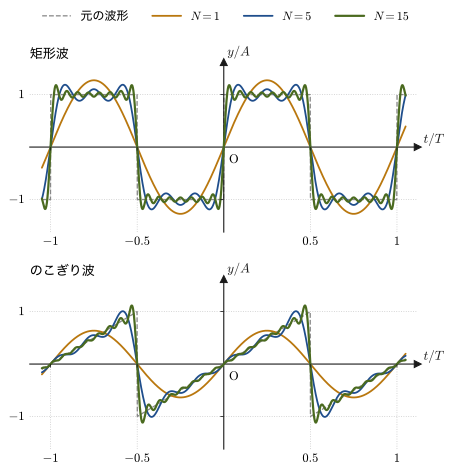
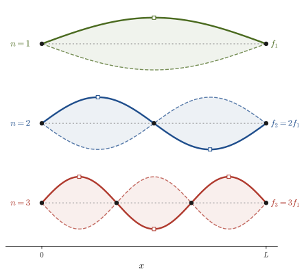
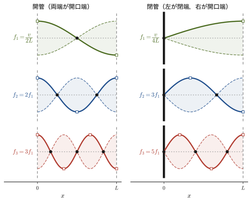
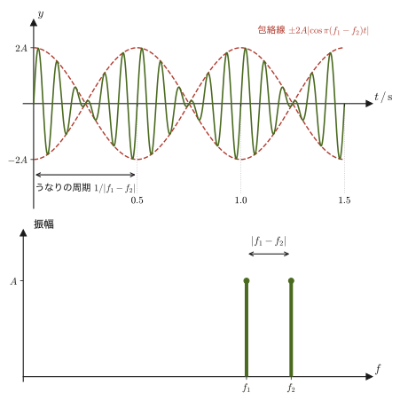
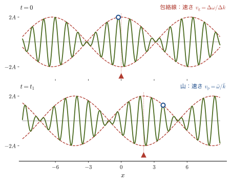
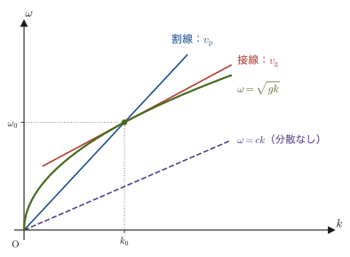
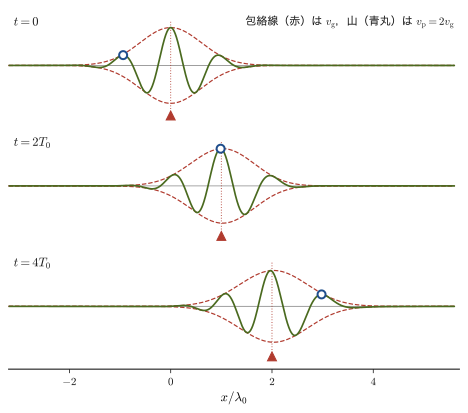
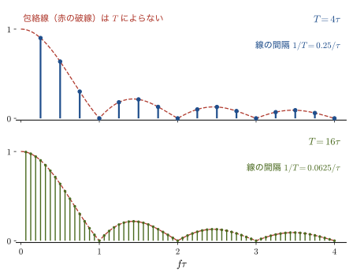
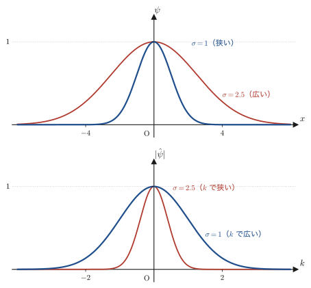

第17章波の重ね合わせとフーリエ解析 — 波束と群速度
音叉を2本並べて鳴らすと，音が「わんわん」と強くなったり弱くなったりする（うなり）．同じ高さの音を出しても，ギターとピアノとフルートでは「音色」がまるで違う．光ファイバーに送ったきれいなパルス信号は，遠くまで伝わるうちに少しずつ幅が広がって読み取りにくくなる．沖から寄せてくるうねりを見ていると，波の山1つ1つは，波の「かたまり」全体よりも速く進んで先頭で消えていく．一見ばらばらに見えるこれらの現象は，すべて「波は重ね合わせられる」という一つの原理，重ね合わせの原理（principle of superposition）から説明できる．
この章では，まず重ね合わせの原理を波動方程式の線形性として定式化し，一般解がダランベールの形 $y=f(x-vt)+g(x+vt)$ になることを確かめる．次に，どんな周期的な波形も単純な正弦波の和（フーリエ級数，Fourier series）で表せることを矩形波とのこぎり波で見て，両端を固定した弦や気柱の固有振動（決まった振動数でしかできない定常波）が，そのままフーリエ級数の「部品」になっていることを，波動方程式の変数分離から理解する．第11章で正弦波の式 $y=A\sin(\omega t-kx+\phi)$ を作り，第12章でうなりや気柱・弦の共鳴を，第16章で光の干渉を学んだが，本章はそれらを一つの見方でまとめ直す第II部（波動）の総まとめの章でもある．
後半では，うなりを「もっとも単純な波束（wave packet）」と見なして，波のかたまりが進む速さ——群速度（group velocity）$v_{\mathrm g}=\dd\omega/\dd k$——が，山1つ1つの進む速さ（位相速度 $v_{\mathrm p}=\omega/k$）とは一般に違うことを導く．最後に，フーリエ変換を使って，波束の空間的な広がり $\Delta x$ と波数の広がり $\Delta k$ の間に $\Delta x\,\Delta k\gtrsim1$ という関係があることを示す．これは，のちに量子力学で学ぶ不確定性関係の，波動としての「原型」である．
本章は，姉妹編「大学数学（AD 02）」で学んだフーリエ級数・フーリエ変換（第27〜30章）と，偏微分方程式としての波動方程式（第43章）という2つの数学の道具が，ここで初めて本格的に物理の問題に結びつく章でもある．なお，真空中の光速は第13章では $c_0$ と書いたが，本章では $c$ と書く（同じもの）．
- 重ね合わせの原理を波動方程式の線形性として定式化し，1次元波動方程式の一般解がダランベールの形 $y=f(x-vt)+g(x+vt)$（右へ進む波と左へ進む波の重ね合わせ）で書けることを導き，初期条件からその後の運動を求める
- 周期的な波形は正弦波の和（フーリエ級数）で表せること，矩形波・のこぎり波を例に部分和が元の波形に近づくようすとギブス現象を見る
- 弦・気柱の固有振動（基準振動）を，波動方程式の変数分離によって求め直し，境界条件が固有振動数を離散化すること，固有振動がフーリエ級数の基底（直交関数系）になっていることを理解する
- うなりを「もっとも単純な波束」として捉え，一般の波束の包絡線が群速度 $v_{\mathrm g}=\dd\omega/\dd k$ で進むことを導く
- 分散関係 $\omega(k)$ の具体例（深水波，媒質中の光，プラズマ，結晶格子）を通して，群速度が位相速度と一致しない場合があること，周期波が分散媒質で形を崩すことを見る
- フーリエ変換によって波束の空間的な広がり $\Delta x$ と波数の広がり $\Delta k$ が $\Delta x\,\Delta k\gtrsim1$ の関係で結ばれることを知り，量子力学の不確定性関係への橋渡しとする
17.1 重ね合わせの原理とダランベールの一般解
第11章 11.2節ですでに，弦を伝わる横波の運動方程式から1次元波動方程式 $\partial^2y/\partial t^2=v^2\,\partial^2y/\partial x^2$（第11章の公式11.1）を導き，その一般解が
\begin{equation} y(x,t)=f(x-vt)+g(x+vt) \label{eq:17-dalembert} \end{equation}の形に書けること（ダランベールの一般解，d'Alembert's general solution，1747年，第11章の定理11.1）を確認した．$f(x-vt)$ は形を変えずに速さ $v$ で $+x$ 向きに進む波，$g(x+vt)$ は $-x$ 向きに進む波であり，正弦波 $y=A\sin(\omega t-kx+\phi)$ はその特別な場合である．この節では，まずこの結果の背後にある一般原理——重ね合わせの原理——を定式化し，そのうえで，一般解から「初期状態が与えられたとき，弦がその後どう動くか」を実際に求める公式（ダランベールの公式）を導く．
法則17.1 重ね合わせの原理
ある波動現象を支配する方程式が線形（未知関数 $y$ について1次式だけからなり，$y^2$ や $(\partial y/\partial x)^2$ のような積・べき乗を含まない）であるとき，2つの解 $y_1(x,t),\ y_2(x,t)$ の任意の1次結合
$$ y(x,t)=c_1 y_1(x,t)+c_2 y_2(x,t)\qquad(c_1,c_2\ \text{は任意の定数}) $$もまた同じ方程式の解になる．これを重ね合わせの原理という．物理的には，「2つ（以上）の波が同じ場所を通過するとき，媒質の変位は，それぞれの波が単独で存在した場合の変位を単純に足し合わせたものになる」ことを意味する．
1次元波動方程式は $\partial^2/\partial t^2,\ \partial^2/\partial x^2$ という線形な演算子だけでできているので，この法則の対象である．第11章で見た定常波 $y=y_1+y_2=2A\sin\omega t\cos kx$（逆向きに進む2つの正弦波の和）や，第16章のヤングの実験の干渉縞（2つのスリットからの波の重なり）は，どちらも法則17.1の具体例であり，ダランベールの一般解 \eqref{eq:17-dalembert} 自体も「右へ進む波 $f(x-vt)$」と「左へ進む波 $g(x+vt)$」という2つの解の重ね合わせにほかならない．
注意：重ね合わせが成り立たなくなるとき
弦の振動や音・光の波は，振幅が十分小さい範囲では良い近似で線形の方程式に従う．しかし振幅が大きくなると非線形性が現れ（衝撃波は第12章で見たその一例），重ね合わせの原理は厳密には成り立たなくなる．また，レーザー光のように強い光が特殊な結晶に入るときも，媒質の応答が非線形になって重ね合わせが破れる．
導出：初期条件から解を決める公式（ダランベールの公式）
一般解 \eqref{eq:17-dalembert} が波動方程式のすべての解を尽くすことは，第11章 11.2節の定理11.1の証明（変数 $\xi=x-vt,\ \eta=x+vt$ への変換）のとおりである．ここでは，その関数 $f,g$ を初期状態から決めることだけを行う．
時刻 $t=0$ での変位を $y(x,0)=u_0(x)$（初期波形），速度を $\partial y/\partial t(x,0)=w_0(x)$（初期速度分布）とする（位相定数 $\phi$ や次節以降の $\psi$ と混同しないよう $u_0,w_0$ と書く）．式 \eqref{eq:17-dalembert} とその $t$ 微分 $\partial y/\partial t=-vf'(x-vt)+vg'(x+vt)$ に $t=0$ を代入すると，
$$ f(x)+g(x)=u_0(x),\qquad -vf'(x)+vg'(x)=w_0(x) $$第2式を $0$ から $x$ まで積分し，$W(x)\equiv\displaystyle\int_0^x w_0(s)\,\dd s$，$C_0\equiv g(0)-f(0)$ とおくと $-f(x)+g(x)=W(x)/v+C_0$．第1式と連立させて解くと
$$ f(x)=\frac12\left[u_0(x)-\frac{W(x)}{v}-C_0\right],\qquad g(x)=\frac12\left[u_0(x)+\frac{W(x)}{v}+C_0\right] $$となる．これを $f(x-vt)+g(x+vt)$ に入れると定数 $C_0$ は打ち消し合い，$W(x+vt)-W(x-vt)=\displaystyle\int_{x-vt}^{x+vt}w_0(s)\,\dd s$ であることから，次の公式が得られる．
（導出終わり）
これをダランベールの公式という．初期速度がゼロ（$w_0\equiv0$，静かに手を放す場合）なら，積分の項が消えて
\begin{equation} y(x,t)=\frac{u_0(x-vt)+u_0(x+vt)}{2} \label{eq:17-dalembert-atrest} \end{equation}という，特に見通しのよい形になる．これは，初期波形 $u_0(x)$ が振幅半分の2つのコピーに分かれ，一方はそのまま速さ $v$ で右へ，他方は左へ進んでいく，という意味である．一方，初期変位が $0$ で初期速度だけがある場合（ピアノのハンマーが弦をたたく場合など）は，第2項だけが残る．この公式は両端のない（無限に長い）弦についてのものである．端のある弦では，波が端で反射して戻ってくる効果が加わり，それは17.3節で正弦級数として扱う．
例題17.1 パルスの分裂
張られた弦の一点を，自然な位置から $h=4.0\ \mathrm{cm}$ だけつまみ上げて三角形の山（底辺の半幅 $a=0.50\ \mathrm{m}$，頂点は原点 $x=0$）を作り，静かに手を放した．初期波形は
$$ u_0(x)=\begin{cases}h\left(1-\dfrac{|x|}{a}\right) & (|x|\le a)\\[4pt] 0 & (|x|>a)\end{cases} $$であり，初期速度は $w_0(x)=0$ である．弦を伝わる波の速さが $v=2.0\ \mathrm{m/s}$（第12章の $v=\sqrt{S/\rho}$ で決まる）のとき，時刻 $t=0.50\ \mathrm{s}$，位置 $x=1.2\ \mathrm{m}$ での変位 $y(x,t)$ を求めよ．
解答 初期速度が0なので式 \eqref{eq:17-dalembert-atrest} が使える．$vt=2.0\times0.50=1.0\ \mathrm{m}$ なので，$x-vt=1.2-1.0=0.2\ \mathrm{m}$，$x+vt=1.2+1.0=2.2\ \mathrm{m}$．$|0.2|\le a=0.50$ なので
$$ u_0(x-vt)=u_0(0.2)=h\left(1-\frac{0.2}{0.5}\right)=4.0\times0.60=2.4\ \mathrm{cm} $$一方 $|2.2|>a=0.50$ なので $u_0(x+vt)=u_0(2.2)=0$．これは，左向きの半分のパルス $g(x+vt)=u_0(x+vt)/2$ が，時刻 $0.50\ \mathrm{s}$ には中心が $x=-vt=-1.0\ \mathrm{m}$（幅 $-1.5\sim-0.5\ \mathrm{m}$）まで遠ざかっていて，$x=1.2\ \mathrm{m}$ には寄与しないことを表している．したがって
$$ y(1.2,\,0.50)=\frac{u_0(0.2)+u_0(2.2)}{2}=\frac{2.4+0}{2}=1.2\ \mathrm{cm} $$この点では，右へ進む半分のパルス $f(x-vt)=u_0(x-vt)/2$（中心 $x=vt=1.0\ \mathrm{m}$，幅 $0.5\sim1.5\ \mathrm{m}$）だけがちょうど通過中である（図17.2）．
17.2 周期的な波のフーリエ級数 — 矩形波とのこぎり波
ダランベールの一般解 $y=f(x-vt)+g(x+vt)$ は，$f,g$ がどんな関数でもよいことを教えてくれるが，「$f$ を具体的にどう表すか」には答えていない．音叉が出す音のようにきれいな正弦波 $y=A\sin(\omega t-kx+\phi)$ ならば話は簡単だが，バイオリンの弦やクラリネットの気柱が出す音，方形波を出す電子回路の波形など，現実の周期的な波はもっと複雑な形をしている．ここで威力を発揮するのが，姉妹編「大学数学（AD 02）」第28章で学んだフーリエ級数（Fourier series）である．フーリエ（Fourier）が熱の伝わり方を調べる中でこの展開を用いたのは1800年代の初めで，その成果は1822年の『熱の解析的理論』にまとめられた．
数学の道具：一般の周期 $2L$ のフーリエ級数（復習）
周期 $2L$ の区分的に滑らかな関数 $f(x)$ は，正弦・余弦の無限級数
\begin{equation} f(x)=\frac{a_0}{2}+\sum_{n=1}^{\infty}\left(a_n\cos\frac{n\pi x}{L}+b_n\sin\frac{n\pi x}{L}\right) \label{eq:17-fourier-general} \end{equation} $$ a_n=\frac1L\int_{-L}^{L}f(x)\cos\frac{n\pi x}{L}\,\dd x,\qquad b_n=\frac1L\int_{-L}^{L}f(x)\sin\frac{n\pi x}{L}\,\dd x $$に展開できる（大学数学 第28章 28.2）．係数 $a_n,b_n$ がこの積分で決まる理由は，三角関数の直交性（大学数学 第27章：異なる $n,m$ に対して $\int_{-L}^{L}\cos\frac{n\pi x}{L}\cos\frac{m\pi x}{L}\,\dd x=0$ など）にある．不連続点では，級数は左右の極限値の平均値に収束する．不連続点をまたぐ収束のしかた（オーバーシュート，ギブス現象）については大学数学 第29章を参照．
波の文脈に読み替えると，時間についての周期 $T$（$2L=T$，$x\to t$）を持つ任意の周期的な振動は，基本角振動数 $\omega_1=2\pi/T$ の整数倍の角振動数 $\omega_n=n\omega_1$ をもつ正弦波（高調波，harmonics）の和として
\begin{equation} y(t)=\frac{a_0}{2}+\sum_{n=1}^{\infty}\left(a_n\cos n\omega_1 t+b_n\sin n\omega_1 t\right) \label{eq:17-fourier-time} \end{equation}と表せる．$n=1$ の項が基本振動（fundamental，第1高調波），$n=2$ の項が第2高調波（基本音の1オクターブ上）である．なお英語の overtone（上音）は基本音を数えないので，第2高調波が第1上音にあたり，数え方が1つずれる（第12章の「第 $(n-1)$ 倍音」はこの数え方である）．本章では混乱を避けて，$n$ 番目の項を「第 $n$ 高調波」または「$n$ 倍振動」と呼ぶ．
応用：楽器の音色とフーリエ級数
ギターやピアノが出す音は，基本振動数 $f_1$ が同じでも，「音色」（timbre）はまったく違って聞こえる．これは，基本振動 $\sin\omega_1t$ に対する高調波 $\sin n\omega_1 t$ の振幅比（式 \eqref{eq:17-fourier-time} の係数 $a_n,b_n$）が楽器ごとに異なるからである．つまり「音色」とは，波形をフーリエ級数に展開したときの係数の並び方にほかならない．たとえば，長さ $L$ の弦を端から距離 $x_0$ の点でつまんではなすと，第 $n$ 高調波の振幅は $\sin(n\pi x_0/L)$ に比例する（17.3節の例題17.3で計算する）．弦の真ん中（$x_0=L/2$）をはじけば偶数次の高調波は消え，$L/4$ の点をはじけば第4高調波が消える．ギターでブリッジの近くをはじくと硬い音，指板の真ん中あたりをはじくとまるい音になるのは，このためである．
フーリエ級数の威力を実感するために，工学でもよく現れる2つの基本波形——矩形波とのこぎり波——を実際に展開してみよう．
導出：矩形波のフーリエ級数
周期 $T$，振幅 $A$ の矩形波（方形波）
$$ y(t)=\begin{cases}A & (0\lt t\lt T/2)\\ -A & (-T/2\lt t\lt0)\end{cases}\qquad(\text{周期 }T\text{ で繰り返す}) $$を考える．$y(-t)=-y(t)$（奇関数）なので，余弦の係数は $a_n=0$（偶関数 $\cos$ と奇関数 $y$ の積を1周期にわたって積分すると打ち消し合う）．正弦の係数は，式 \eqref{eq:17-fourier-general} で $L=T/2,\ \omega_1=2\pi/T$ と読み替えて
$$ b_n=\frac{2}{T}\int_{-T/2}^{T/2}y(t)\sin n\omega_1t\,\dd t =\frac{4}{T}\int_0^{T/2}A\sin n\omega_1t\,\dd t =\frac{4A}{T}\left[-\frac{\cos n\omega_1t}{n\omega_1}\right]_0^{T/2} $$$\omega_1T/2=\pi$ なので $\cos(n\omega_1\cdot T/2)=\cos n\pi=(-1)^n$．したがって
$$ b_n=\frac{4A}{n\omega_1T}\left[1-(-1)^n\right]=\frac{2A}{n\pi}\left[1-(-1)^n\right] $$（$\omega_1T=2\pi$ を使った）．$n$ が偶数なら $1-(-1)^n=0$，$n$ が奇数なら $1-(-1)^n=2$ なので，
\begin{equation} b_n=\begin{cases}\dfrac{4A}{n\pi} & (n\ \text{が奇数})\\[4pt] 0 & (n\ \text{が偶数})\end{cases} \qquad\therefore\quad y(t)=\frac{4A}{\pi}\sum_{k=0}^{\infty}\frac{\sin\bigl((2k+1)\omega_1t\bigr)}{2k+1} \label{eq:17-square-series} \end{equation}（導出終わり）
式 \eqref{eq:17-square-series} は，矩形波が奇数次の高調波（基本振動，3倍振動，5倍振動，…）だけを，振幅を $1/n$ で弱めながら含むことを示している．矩形波が奇数次だけを含む理由は，半波対称性 $y(t+T/2)=-y(t)$（半周期ずらすと符号が反転する）が成り立つことにある．実際，$\sin\bigl(n\omega_1(t+T/2)\bigr)=\sin(n\omega_1t+n\pi)=(-1)^n\sin n\omega_1t$ なので，偶数次の成分は $t\to t+T/2$ で符号が変わらず，符号が反転する $y$ とは両立できない．（矩形波が奇関数であることは余弦成分 $a_n$ を消すだけで，偶数次の正弦成分は半波対称性が消している．）奇数次だけのパターンは，第12章で見た閉管の固有振動（$f,3f,5f,\ldots$）にも現れるが，そちらの理由は，一端が節・他端が腹という境界条件である（17.3節で示すように，形のうえでは同じ半波対称性で説明できる）．
導出：のこぎり波のフーリエ級数
周期 $T$，振幅 $A$ ののこぎり波（1周期の中で単調に増え，端で急激に元へ戻る波形）
$$ y(t)=\frac{2A}{T}t\qquad(-T/2\lt t\lt T/2,\ \text{周期}\ T\ \text{で繰り返す}) $$も奇関数なので $a_n=0$．正弦の係数は，部分積分（$\int t\sin(n\omega_1t)\,\dd t$ の形）を使って
$$ b_n=\frac{2}{T}\int_{-T/2}^{T/2}\frac{2A}{T}t\sin n\omega_1t\,\dd t =\frac{4A}{T^2}\int_{-T/2}^{T/2}t\sin n\omega_1t\,\dd t $$$t\sin n\omega_1t$ は偶関数なので $=\dfrac{8A}{T^2}\displaystyle\int_0^{T/2}t\sin n\omega_1t\,\dd t$．部分積分（$u=t,\ \dd v=\sin n\omega_1t\,\dd t$）を行うと
$$ \int_0^{T/2}t\sin n\omega_1t\,\dd t=\left[-\frac{t\cos n\omega_1t}{n\omega_1}\right]_0^{T/2}+\frac{1}{n\omega_1}\int_0^{T/2}\cos n\omega_1t\,\dd t =-\frac{T}{2n\omega_1}(-1)^n+\frac{1}{n\omega_1}\left[\frac{\sin n\omega_1t}{n\omega_1}\right]_0^{T/2} $$第2項は $\sin(n\omega_1T/2)=\sin n\pi=0$ より消える．$\omega_1=2\pi/T$ を代入して整理すると
\begin{equation} b_n=(-1)^{n+1}\frac{2A}{n\pi}\qquad\therefore\quad y(t)=\frac{2A}{\pi}\sum_{n=1}^{\infty}\frac{(-1)^{n+1}}{n}\sin n\omega_1t \label{eq:17-sawtooth-series} \end{equation}（導出終わり）
矩形波（式 \eqref{eq:17-square-series}）は奇数次の高調波だけを含んだが，のこぎり波（式 \eqref{eq:17-sawtooth-series}）は奇関数だが半波対称性を持たないので，すべての次数の高調波を含む——同じ「フーリエ級数」という枠組みでも，波形の対称性によって現れる高調波の組み合わせが違うことがわかる．また，どちらも不連続点をもつため係数は $1/n$ でしか小さくならない（収束が遅い）．これに対して，折れ線のように連続でかどだけがある三角波では係数が $1/n^2$ で小さくなり，収束が速い．図17.3に，部分和
$$ y_N(t)=\sum_{n=1}^{N}(\text{式}\eqref{eq:17-square-series}\text{または}\eqref{eq:17-sawtooth-series}\text{の第}n\text{項}) $$を項数 $N$（実際に足し合わせる最大次数）を増やしながら計算したようすを示す．$N$ を増やすほど部分和は元の矩形波・のこぎり波に近づいていくが，不連続点の近くでは，どれだけ $N$ を増やしても波形が飛び出す「オーバーシュート」（ギブス現象，Gibbs phenomenon）が残る．

考察：ギブス現象の数値
矩形波の部分和は不連続点の近くで最大値 $\dfrac{2}{\pi}\mathrm{Si}(\pi)\,A\approx1.179A$（$\mathrm{Si}(x)=\int_0^x\frac{\sin s}{s}\,\dd s$ は正弦積分）に近づくことが知られている．跳びの大きさが $2A$ なので，行き過ぎ $0.179A$ は跳びの約 $8.9\%$ にあたる．この現象は，フーリエ級数が不連続点で「収束しない」のではなく，跳びの位置で左右の値の平均値（矩形波なら $0$）に収束することと矛盾しない——行き過ぎが起こる点の位置が，$N$ を増やすごとに不連続点へ近づいていくだけだからである．ウィルブラハム（Wilbraham）が1848年に指摘し，ギブス（Gibbs）が1898〜99年に改めて指摘した現象である．
例題17.2 矩形波の高調波成分
振幅 $A=5.0\ \mathrm{V}$，周期 $T=2.0\ \mathrm{ms}$ の矩形波（式 \eqref{eq:17-square-series} の形）がある．(1) 基本振動数 $f_1$ を求めよ．(2) 基本振動と3倍振動・5倍振動の振幅 $b_1,b_3,b_5$ を求めよ．(3) $t=T/4$ における部分和 $y_N$（$N=1,3,5,7$）と厳密値 $y(T/4)=A$ を比較せよ．
解答 (1) $f_1=1/T=1/(2.0\times10^{-3}\ \mathrm{s})=500\ \mathrm{Hz}$．
(2) 式 \eqref{eq:17-square-series} より $b_n=4A/(n\pi)$（$n$ が奇数のとき）だから，
$$ b_1=\frac{4\times5.0}{\pi}\approx6.37\ \mathrm{V},\qquad b_3=\frac{4\times5.0}{3\pi}\approx2.12\ \mathrm{V},\qquad b_5=\frac{4\times5.0}{5\pi}\approx1.27\ \mathrm{V} $$(3) $\omega_1=2\pi/T$ なので，$t=T/4$ のとき $\omega_1t=\pi/2$ で，$\sin(n\pi/2)$ は $n=1,3,5,7$ に対して $1,-1,1,-1$ である．ここで，$y_N$ は $N$ 以下の奇数次の項の和（$N=1,3,5,7$ はそれぞれ1項，2項，3項，4項）なので，
$$ y_1=\frac{4A}{\pi}\approx6.37\ \mathrm{V},\quad y_3=\frac{4A}{\pi}\left(1-\frac13\right)\approx4.24\ \mathrm{V},\quad y_5=\frac{4A}{\pi}\left(1-\frac13+\frac15\right)\approx5.52\ \mathrm{V},\quad y_7=\frac{4A}{\pi}\left(1-\frac13+\frac15-\frac17\right)\approx4.61\ \mathrm{V} $$となり，$A=5.0\ \mathrm{V}$ を挟んで上下に振動しながら近づいていく（$N=1$ ではまだ約27%大きい）．$N\to\infty$ では括弧の中が $1-\frac13+\frac15-\frac17+\cdots=\pi/4$（ライプニッツの級数）となるので，$y=\dfrac{4A}{\pi}\cdot\dfrac{\pi}{4}=A$ となり，厳密値に一致する．（$N=1001$ まで（501 項）足すと $5.003\ \mathrm{V}$ になる．）
関連シミュレーター：フーリエ級数 — 波を足して形を作るでは，項数を増やしながらいろいろな波形にフーリエ級数が近づいていくようすを対話的に確かめられる．
17.3 弦と気柱の固有振動 — 変数分離とフーリエ基底
第12章では，長さ $L$ の弦の両端を固定すると，境界（両端）がつねに節（変位0）になるという条件から，決まった振動数 $f_n=nv/(2L)\ (n=1,2,3,\ldots)$ でしか定常波ができないことを見た．この節では，同じ結果を1次元波動方程式から出発して，姉妹編「大学数学（AD 02）」第43章 43.4節で学んだ変数分離法（method of separation of variables）によって導き直す．そうすることで，「固有振動」という物理現象と，「フーリエ級数」という数学の道具が，実はまったく同じものの2つの顔であることが見えてくる．最後に，気柱（閉管・開管）の固有振動も，境界条件を替えるだけで同じ手順で求められることを見る．
17.3.1 変数分離による基準振動
導出：両端固定弦の固有振動（変数分離法）
長さ $L$ の弦の変位 $y(x,t)$ は波動方程式 $\partial^2y/\partial t^2=v^2\,\partial^2y/\partial x^2$（$0\lt x\lt L$）に従い，両端が固定されているので境界条件は
$$ y(0,t)=0,\qquad y(L,t)=0\qquad(\text{すべての}\ t\ \text{について}) $$変数分離法では，解が「$x$ だけの関数」と「$t$ だけの関数」の積 $y(x,t)=X(x)T(t)$ の形に書けると仮定する．波動方程式に代入すると $X(x)T''(t)=v^2X''(x)T(t)$，両辺を $v^2X(x)T(t)$ で割ると
$$ \frac{T''(t)}{v^2T(t)}=\frac{X''(x)}{X(x)} $$左辺は $t$ だけの関数，右辺は $x$ だけの関数であり，これらが（任意の $x,t$ について）恒等的に等しいためには，両辺がある定数 $\lambda$（$x,t$ によらない）に等しくなければならない．$\lambda$ の符号を場合分けして，境界条件 $X(0)=X(L)=0$ を満たす解があるかどうかを調べる．
- $\lambda=\kappa^2\gt0$ のとき：$X''=\kappa^2X$ の一般解は $X=Be^{\kappa x}+Ce^{-\kappa x}$．$X(0)=0$ より $C=-B$ で $X=2B\sinh\kappa x$．$X(L)=0$ は $B\sinh\kappa L=0$ を要求するが $\sinh\kappa L\neq0$ なので $B=0$，すなわち $X\equiv0$．
- $\lambda=0$ のとき：$X''=0$ の解は $X=Bx+C$．$X(0)=0$ より $C=0$，$X(L)=BL=0$ より $B=0$．やはり $X\equiv0$．
- $\lambda=-k^2\lt0$（$k\gt0$）のとき：$X''+k^2X=0$ の一般解は $X=B\sin kx+C\cos kx$（第7章の単振動の方程式と同じ形）．これだけが $X\not\equiv0$ の解を持ちうる．
つまり，弦が実際に振動する（$y\not\equiv0$）ためには定数は負でなければならず，$\lambda=-k^2$ とおく．すると
$$ X''(x)+k^2X(x)=0,\qquad T''(t)+(vk)^2T(t)=0 $$という2つの独立な2階線形同次常微分方程式に分離される．$X(0)=0$ より $C=0$，すなわち $X(x)=B\sin kx$．もう一方の境界条件 $X(L)=0$ より
$$ B\sin kL=0 $$$B=0$ では $y\equiv0$（弦が振動しない自明な解）になってしまうので，$B\neq0$ のもとで $\sin kL=0$，すなわち
\begin{equation} kL=n\pi\qquad\therefore\quad k_n=\frac{n\pi}{L}\qquad(n=1,2,3,\ldots) \label{eq:17-kn} \end{equation}という条件が課される．$n=0$ は $X\equiv0$ になり，$n$ が負の整数のときは $\sin(-|n|\pi x/L)=-\sin(|n|\pi x/L)$ で符号が変わるだけ（$B$ に吸収できる）ので，$n=1,2,3,\ldots$ だけを考えればよい．これが，$k$（したがって波長 $\lambda=2\pi/k$）が連続な値をとれず，とびとびの値 $k_n$ しか許されない——境界条件が波数を離散化する——理由である．対応する空間の形は $X_n(x)=\sin(n\pi x/L)$，時間発展は $T''+\omega_n^2T=0$（$\omega_n=vk_n$）の一般解 $T_n(t)=C_n\cos\omega_nt+D_n\sin\omega_nt$ である．よって，方程式と境界条件をともに満たす特解は
\begin{equation} y_n(x,t)=\sin\left(\frac{n\pi x}{L}\right)\bigl(C_n\cos\omega_nt+D_n\sin\omega_nt\bigr),\qquad \omega_n=vk_n=\frac{n\pi v}{L} \label{eq:17-normal-mode} \end{equation}$C_n=A_n\cos\delta_n,\ D_n=-A_n\sin\delta_n$ とおけば，これは $y_n=A_n\sin(n\pi x/L)\cos(\omega_nt+\delta_n)$ と書け，弦のどの点も同じ位相で角振動数 $\omega_n$ の単振動をし，その振幅が $x$ とともに $\sin(n\pi x/L)$ の形で変わる定常波である（第11章 11.7節）．
（導出終わり）
定義17.1 基準振動（固有振動）
式 \eqref{eq:17-normal-mode} の各 $y_n(x,t)$ を，弦の基準振動（normal mode）または固有振動という．とくに空間部分 $X_n(x)=\sin(n\pi x/L)$ をモード関数（mode shape），対応する角振動数 $\omega_n=n\pi v/L$（振動数 $f_n=\omega_n/2\pi=nv/(2L)$）を固有振動数という．これは第12章で弦の共振の議論から得た結果 $f_n=nv/(2L)$ と完全に一致する——境界条件から出発する変数分離法によっても，同じ物理的結論に到達したことになる．

17.3.2 初期条件と展開係数 — フーリエ正弦級数
初期条件（時刻 $t=0$ での弦の形 $y(x,0)=u_0(x)$ と速度 $\partial y/\partial t(x,0)=w_0(x)$）を満たす，実際に起こる弦の運動は，個々の基準振動だけでなく，17.1節の重ね合わせの原理（法則17.1）によって，すべての基準振動の1次結合
\begin{equation} y(x,t)=\sum_{n=1}^{\infty}\sin\left(\frac{n\pi x}{L}\right)\bigl(C_n\cos\omega_nt+D_n\sin\omega_nt\bigr) \label{eq:17-general-string} \end{equation}として書ける．$t=0$ とおくと $u_0(x)=\sum_n C_n\sin(n\pi x/L)$，$t$ で微分して $t=0$ とおくと $w_0(x)=\sum_n\omega_nD_n\sin(n\pi x/L)$ となるが，これはまさに17.2節で見たフーリエ級数——それも，境界条件 $X(0)=X(L)=0$ に対応するフーリエ正弦級数（大学数学 第28章 28.3節）——そのものである．係数はどう決まるだろうか．
導出：展開係数 $C_n,D_n$ の決め方
まず，$\{\sin(n\pi x/L)\}$ が $0\le x\le L$ で直交することを確かめる（大学数学 第27章）．積和公式（高校数学 第5章 5.5節）$\sin\alpha\sin\beta=\tfrac12[\cos(\alpha-\beta)-\cos(\alpha+\beta)]$ より
$$ \int_0^L\sin\frac{n\pi x}{L}\sin\frac{m\pi x}{L}\,\dd x=\frac12\int_0^L\left[\cos\frac{(n-m)\pi x}{L}-\cos\frac{(n+m)\pi x}{L}\right]\dd x=\frac L2\,\delta_{nm} $$（$n\ne m$ のときは $\sin((n\mp m)\pi)=0$ で0．$n=m$ のときは $\frac12\int_0^L[1-\cos(2n\pi x/L)]\dd x=L/2$．$\delta_{nm}$ は $n=m$ のとき1，それ以外は0．）そこで $u_0(x)=\sum_nC_n\sin(n\pi x/L)$ の両辺に $\sin(m\pi x/L)$ をかけて $0$ から $L$ まで積分する（級数を項別に積分してよいとする）と，右辺は $m=n$ の項だけが残って $C_m\cdot L/2$ になる．したがって
\begin{equation} C_n=\frac2L\int_0^L u_0(x)\sin\frac{n\pi x}{L}\,\dd x \label{eq:17-coef-C} \end{equation}同様に $w_0(x)=\sum_n\omega_nD_n\sin(n\pi x/L)$ から $\omega_nD_n=\dfrac2L\displaystyle\int_0^Lw_0(x)\sin\dfrac{n\pi x}{L}\,\dd x$，すなわち $\omega_n=n\pi v/L$ を使って
\begin{equation} D_n=\frac{2}{\omega_nL}\int_0^L w_0(x)\sin\frac{n\pi x}{L}\,\dd x=\frac{2}{n\pi v}\int_0^L w_0(x)\sin\frac{n\pi x}{L}\,\dd x \label{eq:17-coef-D} \end{equation}が得られる．こうして，初期状態を正弦級数に展開すれば，その後の運動が完全に決まる．係数を1つずつ独立に決められるのは，$\sin(n\pi x/L)$ が直交関数系をなしているからである．
（導出終わり）
例題17.3 弦の中点をつまんではなす
長さ $L$ の弦の中点をつまんで $h$ だけ引き上げ，静かにはなした（$w_0\equiv0$）．初期波形は $u_0(x)=2hx/L\ (0\le x\le L/2)$，$u_0(x)=2h(L-x)/L\ (L/2\le x\le L)$ である．(1) 係数 $C_n$ を求めよ．(2) $h=2.0\ \mathrm{mm}$ のとき $C_1,C_3,C_5$ を求めよ．
解答 (1) $w_0\equiv0$ なので式 \eqref{eq:17-coef-D} より $D_n=0$．$C_n$ は式 \eqref{eq:17-coef-C} から
$$ C_n=\frac2L\left[\int_0^{L/2}\frac{2hx}{L}\sin\frac{n\pi x}{L}\,\dd x+\int_{L/2}^{L}\frac{2h(L-x)}{L}\sin\frac{n\pi x}{L}\,\dd x\right] $$第2項で $x=L-x'$ と置き換えると，$\sin\dfrac{n\pi(L-x')}{L}=\sin\left(n\pi-\dfrac{n\pi x'}{L}\right)=(-1)^{n+1}\sin\dfrac{n\pi x'}{L}$ なので，第2項は第1項の $(-1)^{n+1}$ 倍になる．よって $C_n=\dfrac2L\bigl[1+(-1)^{n+1}\bigr]I_n$（$I_n$ は第1項の積分）．$n$ が偶数なら $C_n=0$，$n$ が奇数なら $C_n=\dfrac4LI_n$ である．$a=n\pi/L$ とおいて部分積分 $\int x\sin ax\,\dd x=-\dfrac{x\cos ax}{a}+\dfrac{\sin ax}{a^2}$ を使うと
$$ I_n=\frac{2h}{L}\left[-\frac{x\cos ax}{a}+\frac{\sin ax}{a^2}\right]_0^{L/2}=\frac{2h}{L}\left[-\frac{L}{2a}\cos\frac{n\pi}{2}+\frac{1}{a^2}\sin\frac{n\pi}{2}\right] $$$n$ が奇数のとき $\cos(n\pi/2)=0$ なので，$I_n=\dfrac{2h}{L}\cdot\dfrac{L^2}{n^2\pi^2}\sin\dfrac{n\pi}{2}=\dfrac{2hL}{n^2\pi^2}\sin\dfrac{n\pi}{2}$．したがって
\begin{equation} C_n=\frac{8h}{n^2\pi^2}\sin\frac{n\pi}{2}\quad(n\ \text{が奇数}),\qquad C_n=0\quad(n\ \text{が偶数}) \label{eq:17-pluck-center} \end{equation}(2) $C_1=\dfrac{8\times2.0}{\pi^2}\approx1.62\ \mathrm{mm}$．$\sin(3\pi/2)=-1$ なので $C_3=-\dfrac{C_1}{9}\approx-0.180\ \mathrm{mm}$．$\sin(5\pi/2)=1$ なので $C_5=\dfrac{C_1}{25}\approx0.0648\ \mathrm{mm}$．偶数次は消え，奇数次だけが $1/n^2$ で急速に小さくなるので，中点をはじいた弦の音はほぼ基本音（と少しの3倍音）から成る澄んだ音になる．
応用：はじく位置と音色
同じ計算を，弦を中点でなく端から $x_0$ の点でつまんだ場合（$u_0$ は $x=x_0$ に頂点をもつ三角形）に行うと，$C_n=\dfrac{2hL^2}{n^2\pi^2x_0(L-x_0)}\sin\dfrac{n\pi x_0}{L}$ となる（$x_0=L/2$ とおくと式 \eqref{eq:17-pluck-center} に一致する）．$\sin(n\pi x_0/L)=0$ となる $n$ の高調波は消えるので，$x_0=L/4$ ではじくと $n=4,8,\ldots$ の高調波が消え，ブリッジ（弦の端）に近い $x_0$ ではじくほど高い次数の高調波が強く残って硬い音になる．楽器の音色の違いは，このように励振のしかたと，弦・気柱の固有振動（フーリエ基底）の重ね合わせの割合で決まる（演習17.3）．
17.3.3 3つの見方は同じ現象の3つの顔
イメージ：ダランベールの解・フーリエ級数・基準振動
この章でここまで見てきた「ダランベールの一般解 $f(x-vt)+g(x+vt)$」（17.1節），「フーリエ級数 $\sum_n(a_n\cos+b_n\sin)$」（17.2節），「境界値問題の基準振動 $\sum_n\sin(n\pi x/L)(\cdots)$」（本節）は，バラバラの3つの話ではなく，1次元波動方程式という同じ方程式を，それぞれ異なる角度から見た結果である．両者の対応は積和公式 $\sin\alpha\cos\beta=\tfrac12[\sin(\alpha+\beta)+\sin(\alpha-\beta)]$ を使うとすぐに見える．基準振動の1つは，$\omega_n=vk_n$ なので
$$ \sin(k_nx)\cos(\omega_nt)=\frac12\bigl[\sin k_n(x+vt)+\sin k_n(x-vt)\bigr] $$となり，「左へ進む正弦波と右へ進む正弦波の和」，つまり $g(x+vt)+f(x-vt)$ の形をしている．定常波は，逆向きに進む2つの波の重ね合わせだったのである（第11章）．$w_0\equiv0$ のとき，これを式 \eqref{eq:17-general-string} の全項について足し合わせると，$U(x)=\sum_nC_n\sin(n\pi x/L)$ として $y=\tfrac12[U(x-vt)+U(x+vt)]$ となる．$U$ は，初期波形 $u_0$ を 奇関数として延長し，周期 $2L$ で繰り返した関数 である．これは式 \eqref{eq:17-dalembert-atrest} のダランベールの公式そのもので，端で反射するたびに符号が反転する（固定端反射，第14章 14.1節）ようすを，延長した波形の平行移動として表している．こうして，有限の長さの弦では，「進行波が端で反射をくり返す」という見方と「基準振動（定常波）の重ね合わせ」という見方が，同じ運動の別の表現になっていることがわかる．どちらの見方も，土台にあるのはフーリエ級数という共通の数学である．
例題17.4 ギター弦の固有振動
長さ $L=0.65\ \mathrm{m}$，線密度 $\rho=4.0\times10^{-3}\ \mathrm{kg/m}$ のギターの弦を張力 $S=80\ \mathrm{N}$ で張った．(1) 弦を伝わる横波の速さ $v$ を求めよ．(2) 基本振動数 $f_1$ と3倍振動の振動数 $f_3$ を求めよ．(3) 弦の中点 $x=L/2$ を軽く指で触れながらはじくと，どの固有振動が残るか．モード関数 $X_n(x)=\sin(n\pi x/L)$ を使って答えよ．
解答 (1) 第12章の $v=\sqrt{S/\rho}$ より $v=\sqrt{80/(4.0\times10^{-3})}=\sqrt{2.0\times10^4}\approx141\ \mathrm{m/s}$．
(2) 定義17.1より $f_n=nv/(2L)$ なので，
$$ f_1=\frac{v}{2L}=\frac{141\ \mathrm{m/s}}{2\times0.65\ \mathrm{m}}\approx109\ \mathrm{Hz},\qquad f_3=3f_1\approx326\ \mathrm{Hz} $$（ギターの5弦（A の音，約 $110\ \mathrm{Hz}$）に近い値である．）
(3) 中点に触れると，中点が節（変位0）になる．$X_n(L/2)=\sin(n\pi/2)$ は，$n$ が偶数のとき $0$（中点が節），$n$ が奇数のとき $\pm1$（中点が腹）である．中点が動けなくなるので，中点が腹になる奇数次の固有振動は消え，中点が節である偶数次の固有振動 $n=2,4,\ldots$ だけが残る．したがって最も低い音は $f_2=2f_1\approx218\ \mathrm{Hz}$，基本音のちょうど1オクターブ上になる（ギターの12フレットの自然ハーモニクスで実際に使われる奏法である）．
17.3.4 気柱の固有振動もフーリエ基底になる
気柱の中の空気の変位 $X(x,t)$（管軸方向のずれ）も，同じ1次元波動方程式 $\partial^2y/\partial t^2=v^2\partial^2y/\partial x^2$（$v$ は音速．第12章では音速を $V$ と書いたが，本章では波の速さ一般を $v$ と書く）に従う．違うのは境界条件だけである．第12章 12.4節で見たとおり，閉端では空気が動けないので変位は節（$y=0$），開口端では変位は腹（変位が最大，すなわち $\partial y/\partial x=0$）になる．変数分離 $y=X(x)T(t)$ を行えば，弦と同じ $X''+k^2X=0$ が得られるので，境界条件だけを替えて解けばよい．
- 両端固定の弦：$X(0)=0$ かつ $X(L)=0$．$X=\sin kx$，$k_n=n\pi/L$（$n=1,2,\ldots$）．
- 開管（両端が開口端）：$X'(0)=0$ かつ $X'(L)=0$．一般解 $X=B\cos kx+C\sin kx$ の $X'(0)=Ck=0$ より $C=0$，$X'(L)=-Bk\sin kL=0$ より $kL=n\pi$．$X=\cos(n\pi x/L)$，$k_n=n\pi/L$（$n=1,2,\ldots$．$n=0$ は空気柱全体が一様にずれるだけで振動ではない）．
- 閉管（$x=0$ が閉端，$x=L$ が開口端）：$X(0)=0$ かつ $X'(L)=0$．$X(0)=0$ より $X=B\sin kx$，$X'(L)=Bk\cos kL=0$ より $kL=(2n-1)\pi/2$．$X=\sin\bigl((2n-1)\pi x/(2L)\bigr)$，$k_n=(2n-1)\pi/(2L)$（$n=1,2,\ldots$）．
波数 $k_n$ から $\omega_n=vk_n$，$f_n=\omega_n/2\pi$ を求めてまとめたのが表17.1である．
| 系 | 境界条件（変位 $X$） | モード関数 $X_n(x)$ | 固有振動数 $f_n$ |
|---|---|---|---|
| 両端固定の弦 | $X(0)=0,\ X(L)=0$ | $\sin\dfrac{n\pi x}{L}$ | $\dfrac{nv}{2L}$（$f_1,2f_1,3f_1,\ldots$） |
| 開管 | $X'(0)=0,\ X'(L)=0$ | $\cos\dfrac{n\pi x}{L}$ | $\dfrac{nv}{2L}$（$f_1,2f_1,3f_1,\ldots$） |
| 閉管 | $X(0)=0,\ X'(L)=0$ | $\sin\dfrac{(2n-1)\pi x}{2L}$ | $\dfrac{(2n-1)v}{4L}$（$f_1,3f_1,5f_1,\ldots$） |

閉管の固有振動数が奇数倍だけになる理由も，ここから読み取れる．閉管のモード関数 $\sin\bigl((2n-1)\pi x/(2L)\bigr)$ は，周期 $4L$ の正弦関数の奇数次の高調波だけの族である．どれも $x\to x+2L$ で符号が反転する半波対称性をもち，17.2節で見た矩形波が奇数次だけを含む理由と同じである．どの系でも，モード関数の族は $0\le x\le L$ で直交し（開管では $\int_0^L\cos\frac{n\pi x}{L}\cos\frac{m\pi x}{L}\,\dd x=\frac L2\delta_{nm}$，閉管では $\int_0^L\sin\frac{(2n-1)\pi x}{2L}\sin\frac{(2m-1)\pi x}{2L}\,\dd x=\frac L2\delta_{nm}$），初期状態を展開する係数を式 \eqref{eq:17-coef-C} と同じ手順で1つずつ決められる．つまり，弦や気柱の固有振動は，どれもその系に合ったフーリエ基底（直交関数系）になっている．
注意：変位の節・腹と圧力の節・腹は入れ替わる
音波は縦波なので，空気の変位の節（動かない点）は，まわりの空気が両側から押し縮められる場所で，圧力（密度）変化が最大の腹になる．逆に変位の腹（開口端）では，空気が自由に動けるので圧力はほぼ大気圧のまま変化せず，圧力の節になる．本書では第12章と同じく，節・腹は変位について言う．
例題17.5 閉管と開管の固有振動数
長さ $L=0.50\ \mathrm{m}$ の管の中の空気柱について，音速を $v=340\ \mathrm{m/s}$ とする（開口端補正は無視する）．(1) 開管の固有振動数 $f_1,f_2,f_3$ を求めよ．(2) 閉管の固有振動数 $f_1,f_2,f_3$ を求めよ．(3) 両者の基本音を比べ，閉管に含まれない振動数の系列を答えよ．
解答 (1) 表17.1より，開管は $f_n=nv/(2L)$．$v/(2L)=340/(2\times0.50)=340\ \mathrm{Hz}$ なので $f_1=340\ \mathrm{Hz}$，$f_2=680\ \mathrm{Hz}$，$f_3=1020\ \mathrm{Hz}$．
(2) 閉管は $f_n=(2n-1)v/(4L)$．$v/(4L)=340/(4\times0.50)=170\ \mathrm{Hz}$ なので $f_1=170\ \mathrm{Hz}$，$f_2=3\times170=510\ \mathrm{Hz}$，$f_3=5\times170=850\ \mathrm{Hz}$．
(3) 閉管の基本音 $170\ \mathrm{Hz}$ は開管の基本音 $340\ \mathrm{Hz}$ のちょうど半分，つまり1オクターブ低い．閉管には，基本音の偶数倍（$340,\ 680,\ 1020,\ldots\mathrm{Hz}$）の振動が含まれない．このことが，フルート（ほぼ開管）とクラリネット（ほぼ閉管）の音色の違いの一因になる．
17.4 うなり — もっとも単純な波束
第12章で見たうなりは，振動数のわずかに異なる2つの音 $y_1=A\sin2\pi f_1t,\ y_2=A\sin2\pi f_2t$ を重ね合わせると，
$$ y=y_1+y_2=2A\cos\left(2\pi\cdot\frac{f_1-f_2}{2}t\right)\sin\left(2\pi\cdot\frac{f_1+f_2}{2}t\right) $$のように，「速く振動する成分（平均振動数 $\bar f=(f_1+f_2)/2$）」の振幅が「ゆっくり変化する成分（差の半分の振動数 $|f_1-f_2|/2$）」で変調される，という形になった．この「速い振動を，ゆっくり変化する包絡線（envelope）が包む」という構造こそが，波束（wave packet）の本質である．うなりは，たった2つの正弦波を重ねただけの，もっとも単純な波束の例である．ただし，2つの波だけでは，包絡線が周期的に繰り返して波束の列ができる．1つだけ孤立した波束を作るには，連続的に分布した多数の波数の波が必要で，それは17.6節で扱う．
この式は，「2つの正弦波を足す」ことを，2本の線からなるフーリエ級数（2項だけのフーリエ級数）と見たものでもある．振動数 $f$ を横軸に，各成分の振幅を縦軸にとった図（周波数スペクトル，frequency spectrum）を描くと，うなりのスペクトルは $f_1$ と $f_2$ に立つ2本の棒（線スペクトル）になる（図17.6）．2本の線の間隔 $|f_1-f_2|$ が，うなりの振動数そのものである．線の数が増え，間隔が細かくなると，線スペクトルは連続的なスペクトルに近づいていく——これが17.6節のフーリエ変換につながる．

例題17.6 うなりの線スペクトル
振動数 $f_1=440\ \mathrm{Hz}$，$f_2=444\ \mathrm{Hz}$ の同じ振幅 $A$ の2つの音を同時に鳴らす．(1) スペクトルの2本の線の位置と間隔を答えよ．(2) 平均振動数（速い振動）と，うなりの振動数・周期を求めよ．(3) 包絡線 $2A\cos\bigl(2\pi\cdot\frac{f_1-f_2}{2}t\bigr)$ 自体の振動数を求めよ．
解答 (1) 線は $440\ \mathrm{Hz}$ と $444\ \mathrm{Hz}$ に立ち，間隔は $|f_1-f_2|=4\ \mathrm{Hz}$ である（各線の高さはどちらも $A$）．
(2) 平均振動数は $\bar f=(440+444)/2=442\ \mathrm{Hz}$．音の強さ（振幅の絶対値）が最大になる回数は毎秒 $|f_1-f_2|=4$ 回なので，うなりの振動数は $4\ \mathrm{Hz}$，周期は $1/4=0.25\ \mathrm{s}$ である．
(3) $\cos\bigl(2\pi\cdot2\,t\bigr)$ の振動数は $|f_1-f_2|/2=2\ \mathrm{Hz}$ である．この余弦は1周期の中で正と負を1回ずつとるが，聞こえる強さは絶対値（の2乗）で決まるので，強弱は毎秒4回，つまり余弦の振動数の2倍で繰り返される．
ここまでは時間だけの関数として扱ったが，うなりを空間中を伝わる波として——つまり位置 $x$ にも依存する形で——考え直してみよう．第11章の規約にそろえて，2つの波を
$$ y_1=A\sin(\omega_1t-k_1x),\qquad y_2=A\sin(\omega_2t-k_2x) $$とする（$\omega_1\approx\omega_2$，$k_1\approx k_2$——振動数だけでなく波数もわずかに異なる場合を考える）．和積公式 $\sin P+\sin Q=2\sin\dfrac{P+Q}{2}\cos\dfrac{P-Q}{2}$（高校数学 第5章 5.6節，第12章のうなりの導出で使ったのと同じ公式）を使うと，
\begin{equation} y=y_1+y_2=2A\cos\left(\frac{\Delta\omega}{2}t-\frac{\Delta k}{2}x\right)\sin(\bar\omega t-\bar kx) \label{eq:17-beat-envelope} \end{equation}ここで $\bar\omega=(\omega_1+\omega_2)/2,\ \bar k=(k_1+k_2)/2$（平均），$\Delta\omega=\omega_1-\omega_2,\ \Delta k=k_1-k_2$（差）である．式 \eqref{eq:17-beat-envelope} は，角振動数 $\bar\omega$・波数 $\bar k$ の「速い」正弦波（搬送波，carrier wave）を，角振動数 $\Delta\omega/2$・波数 $\Delta k/2$ の「遅い」余弦波（包絡線）が変調する形になっている．
包絡線の因子 $\cos\bigl((\Delta\omega\,t-\Delta k\,x)/2\bigr)$ は符号が正負に入れ替わるが，波の強さ（振幅の絶対値）が最大になるのは $|\cos|=1$ のときで，そのような「山」は位相 $(\Delta\omega\,t-\Delta k\,x)/2$ が $\pi$ 変わるたびにくり返し現れる．$t$ を固定すると，山と山の間隔（うなりの空間的な波長）は
\begin{equation} \Lambda=\frac{2\pi}{|\Delta k|} \label{eq:17-beat-lambda} \end{equation}である．これは，時間のうなりの周期 $1/|f_1-f_2|=2\pi/|\Delta\omega|$ の空間版で，$k=2\pi/\lambda$ なので $1/\Lambda=|1/\lambda_1-1/\lambda_2|$ とも書け，時間のうなりの $f_{\text{うなり}}=|f_1-f_2|$ と同じ形をしている．（包絡線の余弦そのものの周期は $4\pi/|\Delta k|=2\Lambda$ で，隣り合う山では余弦の符号が反対，搬送波の位相が $\pi$ ずれている．）

包絡線の山がどう動くかを追いかけてみよう．山の位置は，包絡線の位相が一定という条件
$$ \frac{\Delta\omega}{2}t-\frac{\Delta k}{2}x=\text{一定}\qquad\Longrightarrow\qquad \Delta\omega\,t-\Delta k\,x=\text{一定} $$で決まる．これを $x$ について解くと $x=(\Delta\omega/\Delta k)\,t+\text{一定}$．したがって，うなりの山は速さ
$$ \frac{\Delta\omega}{\Delta k} $$で $x$ の正の向きに進む．一方，中の速い搬送波 $\sin(\bar\omega t-\bar kx)$ 自身の山は，これまでどおりの位相速度 $\bar\omega/\bar k$ で進む．$\Delta\omega,\Delta k\to0$（2つの波の振動数・波数の差を限りなく小さくしていく極限）をとると，$\Delta\omega/\Delta k\to\dd\omega/\dd k$ となる——これが，次節で正式に導入する群速度である．うなりは，波束が進む速さ（群速度）が，中身の波の位相速度と一般には異なることを教えてくれる，もっとも簡明な例なのである．
例題17.7 うなりの空間的な波長
波長が $\lambda_1=0.998\ \mathrm{m}$，$\lambda_2=1.002\ \mathrm{m}$ のわずかに異なる2つの正弦波を重ね合わせた．(1) 波数 $k_1,k_2$，平均波数 $\bar k$ と波数の差 $\Delta k=k_1-k_2$ を求めよ．(2) うなりの山と山の間隔 $\Lambda=2\pi/|\Delta k|$ を求めよ．(3) 包絡線の余弦 $\cos(\Delta k\,x/2)$ 自体の周期を求めよ．
解答 (1) $k_1=2\pi/0.998\approx6.2958\ \mathrm{rad/m}$，$k_2=2\pi/1.002\approx6.2706\ \mathrm{rad/m}$ なので，
$$ \bar k=\frac{k_1+k_2}{2}\approx6.283\ \mathrm{rad/m},\qquad \Delta k=k_1-k_2\approx0.0251\ \mathrm{rad/m} $$(2) 式 \eqref{eq:17-beat-lambda} より
$$ \Lambda=\frac{2\pi}{\Delta k}\approx\frac{2\pi}{0.02513}\approx2.50\times10^{2}\ \mathrm{m} $$（$1/\Lambda=|1/\lambda_1-1/\lambda_2|=1/0.998-1/1.002=4.000\times10^{-3}\ \mathrm{m^{-1}}$ から $\Lambda=250\ \mathrm{m}$ と求めても同じである．）(3) 余弦 $\cos(\Delta k\,x/2)$ の周期は $2\pi/(\Delta k/2)=4\pi/\Delta k=2\Lambda\approx500\ \mathrm{m}$ で，隣り合う山では余弦の符号が反対になる．波長がわずか $0.4\%$ しか違わない2つの波を重ねると，1つ1つの波の波長（約 $1\ \mathrm{m}$）よりずっと長い，約 $250\ \mathrm{m}$ ごとに強め合う「うなりの波束」ができる．波数の差 $\Delta k$ が小さいほど山と山の間隔は長くなる．
例題17.8 うなりの包絡線と搬送波の速さ
分散のある媒質を進む2つの正弦波の（波数，角振動数）が $(k_1,\omega_1)=(2.10\ \mathrm{rad/m},\ 4.54\ \mathrm{rad/s})$，$(k_2,\omega_2)=(1.90\ \mathrm{rad/m},\ 4.32\ \mathrm{rad/s})$ である．この2つを重ね合わせたとき，(1) 搬送波の山が進む速さ $\bar\omega/\bar k$，(2) うなりの包絡線が進む速さ $\Delta\omega/\Delta k$ を求め，比べよ．
解答 $\bar k=(2.10+1.90)/2=2.00\ \mathrm{rad/m}$，$\bar\omega=(4.54+4.32)/2=4.43\ \mathrm{rad/s}$，$\Delta k=2.10-1.90=0.20\ \mathrm{rad/m}$，$\Delta\omega=4.54-4.32=0.22\ \mathrm{rad/s}$．
(1) 搬送波の山の速さは $\bar\omega/\bar k=4.43/2.00\approx2.2\ \mathrm{m/s}$．
(2) 包絡線の速さは $\Delta\omega/\Delta k=0.22/0.20=1.1\ \mathrm{m/s}$．
山の速さ（位相速度）は包絡線の速さ（群速度）のほぼ2倍で，波のかたまりの中を，山が後ろから前へ追い越していく．（この数値は深水波 $\omega=\sqrt{gk}$ の値に近く，17.5節で実際にその関係を導く．）
歴史のひとこと：音のうなりを使った音叉・楽器の調律は昔から行われていたが，それを波の重ね合わせとして式で表し，「波のかたまりが進む速さ」を考えたのは19世紀になってからである（群速度の概念は，ハミルトン（Hamilton）が1839年ごろに導入し，レイリー（Rayleigh）が1877年の著書『音の理論』で整えたとされる）．
17.5 波束と群速度・分散関係
前節で，うなり（2つの波の重ね合わせ）から，波束の包絡線が速さ $\Delta\omega/\Delta k$ で進むことを見た．しかし，これは2つの波だけの話である．実際の波束（たとえば水面を進む波のかたまりや光のパルス）は，連続的に分布した多数の波数の波の重ね合わせでできている．そこでもやはり，包絡線が $\dd\omega/\dd k$ で進むことを，一般の波束について導こう．
注意：複素数表示と位相の符号
本書ではここまで，正弦波を $y=A\sin(\omega t-kx+\phi)$ の形で書いてきた（これは複素数 $e^{i(\omega t-kx)}$ の虚部にあたる）．以下の導出とフーリエ変換（17.6節）では，計算に便利な複素指数関数 $e^{i(kx-\omega t)}$ を使う．オイラーの公式より $e^{i(kx-\omega t)}=\cos(kx-\omega t)+i\sin(kx-\omega t)$ で，実部は $\cos(kx-\omega t)=\cos(\omega t-kx)$，虚部は $\sin(kx-\omega t)=-\sin(\omega t-kx)$ である．つまり，本書の $\sin(\omega t-kx)$ とは，虚部をとると符号が逆になる（位相の符号の規約が逆）．しかし，物理的な変位は複素数の実部（または虚部）をとって得られるものであり，$\cos(kx-\omega t)=\sin(\omega t-kx+\pi/2)$ のように，どちらの規約でも同じ形の $+x$ 向きに進む波を表す．以下では，複素数で計算した結果の実部をとって実際の波を考える．
導出：波束の包絡線は群速度で進む
波数が $k_0$ のまわりの狭い範囲（幅 $\Delta k\ll k_0$）に分布する波の重ね合わせ
$$ \psi(x,t)=\int A(k)\,e^{i(kx-\omega(k)t)}\,\dd k $$を考える．$A(k)$ は各波数の重み，$\omega(k)$ はその媒質の分散関係である．$\omega(k)$ を $k_0$ のまわりでテイラー展開し（大学数学 第4章），$q=k-k_0$ とおくと
$$ \omega(k)=\omega_0+v_{\mathrm g}\,q+\frac12\omega''(k_0)\,q^2+\cdots,\qquad \omega_0=\omega(k_0),\quad v_{\mathrm g}=\omega'(k_0)=\left.\diff{\omega}{k}\right|_{k_0} $$これを $kx-\omega t=(k_0x-\omega_0t)+q(x-v_{\mathrm g}t)-\frac12\omega''q^2t-\cdots$ に代入して，速い部分 $e^{i(k_0x-\omega_0t)}$ を積分の外に出すと
$$ \psi(x,t)=e^{i(k_0x-\omega_0t)}\int A(k_0+q)\,e^{iq(x-v_{\mathrm g}t)}\,e^{-\frac i2\omega''q^2t}\,\dd q $$となる．$q^2$ 以上の項が無視できる（$\tfrac12|\omega''|(\Delta k)^2\,t\ll1$，つまり $t\ll2/(|\omega''|(\Delta k)^2)$ の間）と，積分は $F(s)=\int A(k_0+q)e^{iqs}\,\dd q$ を $s=x-v_{\mathrm g}t$ で評価したものになり，
$$ \psi(x,t)\approx e^{i(k_0x-\omega_0t)}\,F(x-v_{\mathrm g}t) $$と因数分解できる．第1因子 $e^{i(k_0x-\omega_0t)}$ は，位相速度 $\omega_0/k_0$ で進む速い正弦波（搬送波），第2因子 $F(x-v_{\mathrm g}t)$ は，形を変えずに速さ $v_{\mathrm g}=\dd\omega/\dd k$ で進むゆっくりした包絡線（$|\psi|=|F(x-v_{\mathrm g}t)|$）である．うなり（2つの波数だけの $A(k)$）では，$q=\pm\Delta k/2$ の2項になって式 \eqref{eq:17-beat-envelope} に一致する．
時間が経って $q^2$ の項が無視できなくなると，波数ごとに位相のずれ方が違うため，包絡線の形が崩れて幅が広がっていく（波束の広がり，wave packet spreading）．$\omega''(k_0)=0$，つまり $\omega\propto k$（分散なし）ならこの項は最初から存在せず，波束は形を保ったまま進み続ける．広がりの量は演習17.6で計算する．
（導出終わり）
定義17.2 位相速度と群速度
角振動数 $\omega$ と波数 $k$ の間の関係 $\omega=\omega(k)$ を分散関係（dispersion relation）という．これに対して，
\begin{equation} v_{\mathrm p}\equiv\frac{\omega}{k}\qquad(\text{位相速度，phase velocity}) \label{eq:17-vp} \end{equation} \begin{equation} v_{\mathrm g}\equiv\frac{\dd\omega}{\dd k}\qquad(\text{群速度，group velocity}) \label{eq:17-vg} \end{equation}と定義する．位相速度は，波の「山」1つ1つが進む速さ（第11章で扱った $v=\omega/k=f\lambda$ そのもの）である．群速度は，波束を作っている波数がすべて $k$ に近いとき（$\Delta k\ll k$，「準単色」な波束）の，波束の"かたまり"（振幅の包絡線）全体が進む速さである．吸収が弱く，分散がなだらかな領域では，群速度はエネルギーや信号が実際に運ばれる速さでもある．
注意：群速度が「信号の速さ」でなくなるとき
媒質が光を強く吸収する周波数のすぐ近く（異常分散，anomalous dispersion，$\dd n/\dd\omega\lt0$）では，公式の上では $v_{\mathrm g}$ が真空中の光速 $c$ を超えたり，負になったりする．しかしその領域ではパルスが強く吸収され，形が大きくくずれるので，「包絡線が形を保って進む」という群速度の前提そのものが成り立たない．そのような場合でも，情報やエネルギーが運ばれる速さは真空中の光速 $c$ を超えない（相対性理論と因果律）．群速度が信号の速さと考えてよいのは，上の定義に書いた，吸収が弱くて分散がなだらかな領域である．
$\omega(k)$ が $k$ に比例する（$\omega=vk$，$v$ は $k$ によらない定数）とき，$v_{\mathrm p}=\omega/k=v$，$v_{\mathrm g}=\dd\omega/\dd k=v$ となり，位相速度と群速度は一致する．このような波を分散のない（non-dispersive）波という．弦を伝わる波（第11章・第12章の $v=\sqrt{S/\rho}$，$k$ によらない）や，真空中の光（$\omega=ck$．光が電磁波であることは第14章 14.6節で見たとおりで，$c$ が波長によらない定数であることが電磁気学で示される）はこの例である．しかし，一般には $\omega(k)$ は $k$ に比例するとは限らず，そのときは $v_{\mathrm p}\neq v_{\mathrm g}$ になる——これを分散がある（dispersive）という．以下，いくつかの具体例を見よう．
分散関係の例①：深い水面を伝わる重力波
海や湖の水面にできる波のうち，波長が水深の2倍より短く（水深が波長の半分より深い「深水波」，deep-water wave．このとき水は底の影響を受けない），かつ波長が数 cm より長くて表面張力が無視できる重力波は，流体力学（本書の範囲を超えるので導出はしないが，よく知られた結果である）により，次の分散関係に従う：
\begin{equation} \omega=\sqrt{gk} \label{eq:17-deepwater} \end{equation}（$g$ は重力加速度）．この形は次元解析からも推測できる．波の運動を決める量が重力加速度 $g$（$\mathrm{m/s^2}$）と波数 $k$（$\mathrm{m^{-1}}$）だけなら，角振動数（$\mathrm{s^{-1}}$）をつくる組み合わせは $\sqrt{gk}$ しかなく，$\omega=C\sqrt{gk}$（$C$ は無次元の定数）となる．流体力学の計算は $C=1$ を与える．式 \eqref{eq:17-deepwater} は $\omega\propto k$ ではないので，深水波ははっきりと分散がある．位相速度と群速度は
$$ v_{\mathrm p}=\frac{\omega}{k}=\frac{\sqrt{gk}}{k}=\sqrt{\frac{g}{k}},\qquad v_{\mathrm g}=\frac{\dd\omega}{\dd k}=\frac{1}{2}\sqrt{\frac{g}{k}}=\frac{v_{\mathrm p}}{2} $$と求まる——深水波では，波束（波の集団）が進む速さは，個々の波の山が進む速さのちょうど半分である．沖から来るうねりや船の引き波の波群を観察すると，波群の後ろで新しい山が生まれ，群の中を前へ追い越して，先頭で消えていくのが見える（図17.9）．一方，波長が約 $1.7\ \mathrm{cm}$ より短い小さなさざ波では，重力よりも表面張力が復元力として効き，分散関係は $\omega^2=gk+(\sigma/\rho_{\mathrm m})k^3$（$\sigma$ は表面張力，$\rho_{\mathrm m}$ は水の密度）に変わって $v_{\mathrm g}=\tfrac32v_{\mathrm p}$ と逆転する（演習17.5）．池に小石を落としたときに外側にできる細かい波紋は，この種のさざ波である．
逆に，波長が水深よりずっと長い浅水波では $\omega=\sqrt{gh}\,k$（$h$ は水深）となり，分散がなく速さは $\sqrt{gh}$ である．水深 $4000\ \mathrm{m}$ の外洋では $\sqrt{9.8\times4000}\approx198\ \mathrm{m/s}$（時速約 $710\ \mathrm{km}$）で，津波はこの速さで伝わる．
分散関係の例②：分散性のある媒質中の光
第14章 14.6節で見た光の分散（プリズムで色が分かれる現象）は，屈折率 $n$ が真空中の波長（あるいは振動数 $\omega$）によってわずかに変わること（正常分散，波長が短いほど $n$ が大きい）が原因だった（物理的な起源は第13章 13.4節）．媒質中では位相速度は $v_{\mathrm p}=c/n(\omega)$，波数は $k=n(\omega)\,\omega/c$ で関係づけられる．群速度を求めるには，$\dd\omega/\dd k$ ではなく，逆に $\dd k/\dd\omega$ を計算してから逆数をとると見通しがよい：
$$ \frac{\dd k}{\dd\omega}=\frac{1}{c}\left(n+\omega\frac{\dd n}{\dd\omega}\right) \qquad\therefore\quad v_{\mathrm g}=\frac{\dd\omega}{\dd k}=\frac{c}{\,n+\omega\,\dfrac{\dd n}{\dd\omega}\,} $$$n$ が $\omega$ によらない（分散がない）なら $v_{\mathrm g}=c/n=v_{\mathrm p}$ に戻る．しかし正常分散（$\dd n/\dd\omega>0$）のガラスや光ファイバーのような媒質では，分母が $n$ より大きくなるため $v_{\mathrm g}\lt v_{\mathrm p}$ となる．光パルス（多数の波長成分を含む波束）がガラスや光ファイバーの中を進むと，成分ごとに群速度がわずかに異なるために，進むにつれてパルスの幅がじわじわと広がっていく（パルス広がり，pulse broadening）．これは長距離の光ファイバー通信で信号を劣化させる主要な原因の一つであり，分散を打ち消す特殊なファイバーや補償技術が実用化されている．
分散関係の例③：プラズマ・X線 — 位相速度が $c$ を超えるとき
第13章 13.4節の分散の式 $n^2=1+\dfrac{N_{\mathrm e}e^2}{\varepsilon_0m_{\mathrm e}(\omega_0^2-\omega^2)}$ で，電子が束縛されていない（$\omega_0=0$，自由電子）場合，つまり電離層のようなプラズマ（自由電子を含む気体）では $n^2=1-\omega_{\mathrm p}^2/\omega^2$（$N_{\mathrm e}$ は電子の数密度，$e$ は電気素量，$\omega_{\mathrm p}=\sqrt{N_{\mathrm e}e^2/(\varepsilon_0m_{\mathrm e})}$ はプラズマ角振動数）となる．波数は $k=n\omega/c$ なので $c^2k^2=n^2\omega^2$ より，分散関係は
\begin{equation} \omega^2=\omega_{\mathrm p}^2+c^2k^2 \label{eq:17-plasma} \end{equation}である（X線が物質中で $n\lt1$ になるのも同じ形の式による）．$\omega\gt\omega_{\mathrm p}$ の波は伝わり，$\omega\lt\omega_{\mathrm p}$ の波は $k$ が虚数になって伝わらず反射される．式 \eqref{eq:17-plasma} の両辺を $k$ で微分すると $2\omega\,\dd\omega/\dd k=2c^2k$ なので
$$ v_{\mathrm p}=\frac{\omega}{k}=\frac{c}{\sqrt{1-\omega_{\mathrm p}^2/\omega^2}}=\frac{c}{n}\gt c,\qquad v_{\mathrm g}=\frac{\dd\omega}{\dd k}=\frac{c^2k}{\omega}=c\sqrt{1-\frac{\omega_{\mathrm p}^2}{\omega^2}}=cn\lt c,\qquad v_{\mathrm p}v_{\mathrm g}=c^2 $$となる．位相速度（山の進む速さ）は $c$ を超えるが，エネルギーや信号を運ぶ群速度は $c$ より小さい．位相速度は，波の山や谷という「模様」が動く速さにすぎず，信号を運ばないので，これは相対性理論と矛盾しない（第13章 13.3節）．関係 $v_{\mathrm p}v_{\mathrm g}=c^2$ は，相対論的な粒子の物質波（$v_{\mathrm g}$ が粒子の速さ）にもそのまま現れる．
発展：結晶格子の分散関係
質量 $m$ の原子が間隔 $a$ でならび，隣どうしがばね定数 $\kappa$（第11章と同じ記号）のばねでつながれた1次元の結晶（第19章 19.1節のように固体をばねで結んだ質点の集まりと見るモデル）を考える．$n$ 番目の原子の変位 $u_n$ の運動方程式は $m\ddot u_n=\kappa(u_{n+1}+u_{n-1}-2u_n)$ である．進行波の形 $u_n=e^{i(kna-\omega t)}$ を代入すると $-m\omega^2=\kappa(e^{ika}+e^{-ika}-2)=-4\kappa\sin^2(ka/2)$ となり，分散関係
\begin{equation} \omega=2\sqrt{\frac\kappa m}\left|\sin\frac{ka}{2}\right| \label{eq:17-lattice} \end{equation}が得られる．波長が長い（$ka\ll1$）極限では $\omega\approx a\sqrt{\kappa/m}\,k$ で分散がなく，$v=a\sqrt{\kappa/m}$ が結晶中の音速である．しかし $k$ が大きくなると曲線は寝てきて，$v_{\mathrm g}=a\sqrt{\kappa/m}\cos(ka/2)$ は小さくなり，ブリルアン域（$-\pi/a\lt k\le\pi/a$，格子の周期性から，これより外の $k$ は内側の $k$ と区別できない）の端 $k=\pi/a$（波長 $2a$）では $v_{\mathrm g}=0$ になる（隣り合う原子が逆位相で振動する定在波で，エネルギーが運ばれない）．たとえば $\kappa=20\ \mathrm{N/m}$，$m=4.0\times10^{-26}\ \mathrm{kg}$，$a=0.30\ \mathrm{nm}$ とすると，音速は $v\approx6.7\ \mathrm{km/s}$，最大の角振動数は $2\sqrt{\kappa/m}\approx4.5\times10^{13}\ \mathrm{rad/s}$（$7\ \mathrm{THz}$）である．この分散関係は，固体の比熱を説明するデバイ模型など，第VII部（統計力学）の格子振動の議論の土台になる．

イメージ：なぜ接線の傾きが群速度なのか
群速度の定義 $v_{\mathrm g}=\dd\omega/\dd k$ は，$\omega(k)$ のグラフ上のある点での接線の傾きそのものである．一方，位相速度 $v_{\mathrm p}=\omega/k$ は，原点からその点までを結んだ直線（割線）の傾きである．曲線が直線（原点を通る比例関係）であれば，接線の傾きと割線の傾きはどこでも同じ——これが分散のない場合に $v_{\mathrm g}=v_{\mathrm p}$ になる理由である．曲線が上に凸（深水波のように $\omega\propto\sqrt k$）であれば，接線の傾きは割線の傾きより小さくなり，$v_{\mathrm g}\lt v_{\mathrm p}$ となる．

考察：周期波が分散媒質を伝わるとき
17.2節のフーリエ級数と17.5節の分散は，次のようにつながる．基本角振動数 $\omega_1$ の周期波（たとえば矩形波）は，高調波 $b_n\sin(n\omega_1t)$ の和である．これが距離 $x$ だけ離れた場所まで伝わると，$n$ 番目の成分は $b_n\sin(n\omega_1t-k_nx)$ になり，全体は
$$ y(x,t)=\sum_nb_n\sin(n\omega_1t-k_nx),\qquad k_n=k(n\omega_1) $$である．分散がない（$\omega=vk$）と，どの成分も $k_n=n\omega_1/v$ で，$y(x,t)=\sum_nb_n\sin\bigl(n\omega_1(t-x/v)\bigr)$ は元の波形を時間 $x/v$ だけずらしたもの，つまり波形は崩れずに速さ $v$ で進む．ところが $\omega(k)$ が $k$ に比例しないと，成分ごとに位相速度 $\omega/k$ が違うので，進むにつれて成分どうしの位相関係がずれて，波形が崩れていく．長距離の電線や光ファイバーで，鋭い矩形パルスがなまったり広がったりするのはこのためである．
例題17.9 深水波の位相速度と群速度
波長 $\lambda=20\ \mathrm{m}$ の深水波（うねり）がある．$g=9.8\ \mathrm{m/s^2}$ として，(1) 波数 $k$，角振動数 $\omega$，(2) 位相速度 $v_{\mathrm p}$，(3) 群速度 $v_{\mathrm g}$ を求めよ．
解答 (1) $k=2\pi/\lambda=2\pi/20\approx0.3142\ \mathrm{rad/m}$．式 \eqref{eq:17-deepwater} より
$$ \omega=\sqrt{gk}=\sqrt{9.8\times0.3142}\approx\sqrt{3.079}\approx1.755\ \mathrm{rad/s} $$(2) $v_{\mathrm p}=\omega/k=1.755/0.3142\approx5.59\ \mathrm{m/s}$．（$v_{\mathrm p}=\sqrt{g/k}=\sqrt{9.8/0.3142}\approx5.59\ \mathrm{m/s}$ でも同じ値になることを確かめられる．）
(3) $v_{\mathrm g}=v_{\mathrm p}/2\approx2.79\ \mathrm{m/s}$．波の山1つ1つは秒速約 $5.6\ \mathrm{m}$ で進むが，波束（波群）全体はその半分の秒速約 $2.8\ \mathrm{m}$ でしか進まない．
例題17.10 分散性媒質中の群速度（模型計算）
正常分散を示すガラスを単純化した模型として，$\omega_0$ のまわりで屈折率が振動数の1次式 $n(\omega)=n_0+\alpha\omega$ で表されると仮定する（$n_0=1.49$，$\alpha=7.0\times10^{-18}\ \mathrm{s}$．$n(\omega_0)$ がふつうのガラスの値 $1.5$ 程度になるように選んだ模型の値で，$\alpha$ の大きさは可視光でのふつうのガラスの $\dd n/\dd\omega$ のオーダー（$10^{-17}\ \mathrm{s}$ 程度）である）．角振動数 $\omega_0=3.0\times10^{15}\ \mathrm{rad/s}$（可視光）における (1) 屈折率 $n(\omega_0)$，(2) 位相速度 $v_{\mathrm p}$，(3) 群速度 $v_{\mathrm g}$ を求めよ．$c=2.998\times10^8\ \mathrm{m/s}$ とする．
解答 (1) $n(\omega_0)=1.49+7.0\times10^{-18}\times3.0\times10^{15}=1.49+0.021=1.511$．
(2) $v_{\mathrm p}=c/n=\dfrac{2.998\times10^8}{1.511}\approx1.984\times10^8\ \mathrm{m/s}$．
(3) $\dd n/\dd\omega=\alpha=7.0\times10^{-18}\ \mathrm{s}$ なので $\omega_0\alpha=0.021$ で，
$$ v_{\mathrm g}=\frac{c}{n+\omega\,\dd n/\dd\omega}=\frac{2.998\times10^8}{1.511+0.021}=\frac{2.998\times10^8}{1.532}\approx1.957\times10^8\ \mathrm{m/s} $$たしかに $v_{\mathrm g}\approx1.96\times10^8\ \mathrm{m/s}\lt v_{\mathrm p}\approx1.98\times10^8\ \mathrm{m/s}$ となり，正常分散（$\dd n/\dd\omega>0$）の媒質では群速度が位相速度より小さいことが確かめられる．差は約 $1.4\%$ と小さいが，長い光ファイバーではこの差が累積して，パルス幅の広がりとして効いてくる．
例題17.11 電離層を伝わる電波
電離層の電子密度を $N_{\mathrm e}=1.0\times10^{12}\ \mathrm{m^{-3}}$ とする．(1) プラズマ振動数 $f_{\mathrm p}=\omega_{\mathrm p}/2\pi$ を求めよ．(2) 振動数 $f=15\ \mathrm{MHz}$ の短波が伝わるときの屈折率 $n$，位相速度 $v_{\mathrm p}$，群速度 $v_{\mathrm g}$ を求めよ．(3) $f=5.0\ \mathrm{MHz}$ の短波はどうなるか．
解答 (1) $\omega_{\mathrm p}=\sqrt{N_{\mathrm e}e^2/(\varepsilon_0m_{\mathrm e})}=\sqrt{\dfrac{1.0\times10^{12}\times(1.602\times10^{-19})^2}{8.854\times10^{-12}\times9.109\times10^{-31}}}\approx5.64\times10^{7}\ \mathrm{rad/s}$ なので $f_{\mathrm p}=\omega_{\mathrm p}/2\pi\approx8.98\times10^6\ \mathrm{Hz}=8.98\ \mathrm{MHz}$．
(2) $n=\sqrt{1-(f_{\mathrm p}/f)^2}=\sqrt{1-(8.98/15)^2}=\sqrt{1-0.358}\approx0.801$．$v_{\mathrm p}=c/n\approx1.25c\approx3.74\times10^8\ \mathrm{m/s}$，$v_{\mathrm g}=cn\approx0.801c\approx2.40\times10^8\ \mathrm{m/s}$．積 $v_{\mathrm p}v_{\mathrm g}=c^2$ になっている．位相速度は $c$ を超えるが，電波が信号を運ぶ速さ（群速度）は $c$ より小さい．
(3) $f=5.0\ \mathrm{MHz}\lt f_{\mathrm p}=8.98\ \mathrm{MHz}$ なので $n^2=1-(8.98/5.0)^2\lt0$，波は電離層の中を伝わらず反射される．短波通信が電離層の反射を使って地球の裏側まで届くのは，このためである．
17.6 フーリエ変換と波束の幅 — $\Delta x\,\Delta k\gtrsim1$
17.2節のフーリエ級数は，周期的な波形を，とびとびの波数 $k_n=n\pi/L$（あるいは振動数 $n\omega_1$）を持つ正弦波の和で表すものだった．しかし，17.4節・17.5節で見た孤立した波束は，空間的に局在した（ある範囲の外ではほぼ0になる），周期的でない波形である．周期を持たない波形をフーリエ級数で表すにはどうすればよいだろうか．
17.6.1 周期を無限大にする極限
導出：矩形パルス列のフーリエ級数
幅 $\tau$ のパルスが周期 $T$ でくり返す列 $y(t)$（$|t|\lt\tau/2$ で $A$，それ以外の $|t|\le T/2$ で $0$，$\tau\lt T$）を考える．$y(-t)=y(t)$（偶関数）なので $b_n=0$．$\omega_1=2\pi/T$ として，
$$ \frac{a_0}{2}=\frac1T\int_{-\tau/2}^{\tau/2}A\,\dd t=\frac{A\tau}{T},\qquad a_n=\frac2T\int_{-\tau/2}^{\tau/2}A\cos n\omega_1t\,\dd t=\frac{2}{T}\cdot\frac{2A\sin(n\omega_1\tau/2)}{n\omega_1}=\frac{2A}{n\pi}\sin\frac{n\pi\tau}{T} $$（$\omega_1T=2\pi$ を使った）．第 $n$ 高調波の振動数を $f_n=n/T$ とおくと，$n\pi\tau/T=\pi f_n\tau$ なので
\begin{equation} a_n=\frac{2A\tau}{T}\cdot\frac{\sin(\pi f_n\tau)}{\pi f_n\tau} \label{eq:17-pulse-train} \end{equation}と書ける．すなわち線スペクトルの高さは，周期 $T$ によらない同じ包絡線（$\sin x/x$ の形，最初のゼロ点は $f=1/\tau$）に沿って並び，線の間隔は $f_{n+1}-f_n=1/T$ である．
（導出終わり）
周期 $T$ を大きくしていくと（パルスの幅 $\tau$ は一定），線スペクトルの間隔 $1/T$ はどんどん細かくなり，各線の高さは $\tau/T$ に比例して小さくなる．線は連続的な曲線に近づいていく（図17.10）．$T\to\infty$ とは，パルスが1つだけ孤立して存在する（周期がない）場合であり，そのスペクトルは連続的になる．これがフーリエ変換である．

例題17.12 パルス列から連続スペクトルへ
幅 $\tau=1.0\ \mathrm{\mu s}$，高さ $A=1.0\ \mathrm{V}$ のパルスが周期 $T$ でくり返している．(1) $T=10\ \mathrm{\mu s}$ のとき，線スペクトルの線の間隔，包絡線の最初のゼロ点までにある0でない線の数，$a_1$ を求めよ．(2) $T=100\ \mathrm{\mu s}$ のときの同じ量を求め，$T\to\infty$ で何が起こるかを述べよ．
解答 (1) 線の間隔は $1/T=1/(10\times10^{-6}\ \mathrm{s})=1.0\times10^5\ \mathrm{Hz}=100\ \mathrm{kHz}$．包絡線の最初のゼロ点は $f=1/\tau=1.0\ \mathrm{MHz}$．これは $n=f/(1/T)=T/\tau=10$ 番目の線にあたり，この線の高さは $0$ になる（式 \eqref{eq:17-pulse-train} で $\sin(\pi f_n\tau)=\sin\pi=0$）．したがって最初のゼロ点までにある0でない線は $n=1,2,\ldots,9$ の9本である．$a_1=\dfrac{2A}{\pi}\sin\dfrac{\pi\tau}{T}=\dfrac{2\times1.0}{\pi}\sin(0.1\pi)\approx0.197\ \mathrm{V}$．
(2) 線の間隔は $1/T=10\ \mathrm{kHz}$，最初のゼロ点までの0でない線は $T/\tau-1=99$ 本，$a_1=\dfrac{2}{\pi}\sin(0.01\pi)\approx0.0200\ \mathrm{V}$．周期を10倍にすると，線の間隔は $1/10$，線の数は約10倍，各線の高さは約 $1/10$ になる．$T\to\infty$ では線の間隔が0に近づいて，線が隙間なくつながった連続スペクトル（包絡線の形の曲線）になる．周期的なパルス列のフーリエ級数が，孤立したパルスのフーリエ変換に変わるのである．なお，最初のゼロ点までの幅 $1/\tau=1.0\ \mathrm{MHz}$ はパルスの幅 $\tau$ に反比例し，$T$ には依存しない．
17.6.2 フーリエ変換と波束の幅の関係
数学の道具：フーリエ級数からフーリエ変換へ（復習）
姉妹編「大学数学（AD 02）」第30章 30.1節で学んだように，周期 $2L$ のフーリエ級数 \eqref{eq:17-fourier-general} で，周期を無限大にする極限 $L\to\infty$ をとると，とびとびの波数 $k_n=n\pi/L$ の間隔が0に近づいて連続的な波数 $k$ になり，級数（和）が積分に置き換わる．こうして得られるのがフーリエ変換（Fourier transform）
$$ \hat\psi(k)=\int_{-\infty}^{\infty}\psi(x)\,e^{-ikx}\,\dd x,\qquad \psi(x)=\frac{1}{2\pi}\int_{-\infty}^{\infty}\hat\psi(k)\,e^{ikx}\,\dd k $$である．波束 $\psi(x)$（局在した波形）は，こうして，連続的に分布した波数 $k$ の平面波 $e^{ikx}$ を，重み $\hat\psi(k)$ で重ね合わせたもの——重ね合わせの原理（法則17.1）を，離散的な和から連続的な積分にまで一般化したもの——として理解できる．時間因子をつけると $e^{i(kx-\omega t)}$ になるので，17.5節の注意（複素数表示と位相の符号）が，そのまま当てはまる．矩形パルスのフーリエ変換（大学数学 第30章 30.2節）やガウス関数のフーリエ変換（同 30.4節）は，その具体例である．
ここで，フーリエ変換のペア $\psi(x)\leftrightarrow\hat\psi(k)$ には，一般に成り立つ重要な性質がある：$\psi(x)$ が $x$ 方向に狭く（局在して）いるほど，$\hat\psi(k)$ は $k$ 方向に広くなる（逆もまた成り立つ）．直感的には，17.4節で見たように，波数の差 $\Delta k$ が小さいほど（ほとんど単色に近いほど）うなりの山と山の間隔 $\Lambda=2\pi/\Delta k$ は長く（波束は広く）なる——この関係を極限まで推し進めると，波束を空間的にどんどん狭く（局在させて）いくには，より広い範囲の波数を重ね合わせる必要がある，ということになる．
導出：矩形パルスで見る $\Delta x\,\Delta k$ の関係（オーダーの見積もり）
幅 $\Delta x$ の矩形パルス $\psi(x)=1\ (|x|\lt\Delta x/2)$，$\psi(x)=0\ (|x|\gt\Delta x/2)$ のフーリエ変換は，大学数学 第30章 30.2節の結果を使うと
$$ \hat\psi(k)=\int_{-\Delta x/2}^{\Delta x/2}e^{-ikx}\,\dd x=\Delta x\cdot\frac{\sin(k\,\Delta x/2)}{k\,\Delta x/2} $$という「シンク関数」（$\mathrm{sinc}$，減衰しながら振動する関数）になる．この関数は $k=0$ で最大値 $\Delta x$ をとり，最初に0になるのは $k\,\Delta x/2=\pi$，すなわち $k=2\pi/\Delta x$ のところである．$\hat\psi(k)$ の「広がり」の目安を，この最初のゼロ点までの幅 $\Delta k\sim2\pi/\Delta x$ で見積もると，
\begin{equation} \Delta x\,\Delta k\sim2\pi \label{eq:17-uncertainty-order} \end{equation}という関係が得られる．これは，パルスの「主要部の全幅」を $\Delta x$，スペクトルの「主要部の全幅」（最初のゼロ点までの幅）を $\Delta k$ とした，オーダーの見積もりである．幅の定め方（全幅か，半分の幅か，後述の標準偏差か）によって係数（$2\pi$ か，それに近いオーダー1の数か）は変わるが，どんな局在した波形でも，おおむね
\begin{equation} \Delta x\,\Delta k\gtrsim1 \label{eq:17-uncertainty} \end{equation}という不等式が成り立つ．波束を空間的に狭くしよう（$\Delta x$ を小さくしよう）とすると，必ず $\Delta k$（波束を作るのに必要な波数の広がり）が大きくならざるを得ない——これは，波というものが持つ数学的な構造そのものから来る制約であり，どんな種類の波（弦の波，音波，光波，のちに学ぶ物質波）にも当てはまる普遍的な性質である．
（導出終わり）
波束の幅とフーリエ変換の広がりが反比例するという事実は，大学数学 第30章 30.4節で学んだガウス関数のフーリエ変換で，もっともきれいな形で確認できる．広がり $\sigma$ のガウス型の波束
$$ \psi(x)=e^{-x^2/(2\sigma^2)} $$のフーリエ変換は，$\hat\psi(k)=\sigma\sqrt{2\pi}\,e^{-\sigma^2k^2/2}$，すなわち広がり $1/\sigma$ のガウス関数になる（$\sigma$ が小さい＝ $x$ 空間で狭い波束ほど，$k$ 空間では広がる．図17.11）．
ここで，「幅」を厳密に定義しておこう．$|\psi(x)|^2$ を確率分布のように見たときの標準偏差（ばらつきの大きさ）を $\Delta x$，同様に $|\hat\psi(k)|^2$ の標準偏差を $\Delta k$ とする．ガウス型では $|\psi|^2\propto e^{-x^2/\sigma^2}$，$|\hat\psi|^2\propto e^{-\sigma^2k^2}$ なので，
$$ \Delta x=\frac{\sigma}{\sqrt2},\qquad \Delta k=\frac{1}{\sqrt2\,\sigma}\qquad\therefore\quad \Delta x\,\Delta k=\frac12 $$となり，$\sigma$ によらない．実は，どんな波形でも標準偏差で測れば
\begin{equation} \Delta x\,\Delta k\ge\frac12 \label{eq:17-uncertainty-exact} \end{equation}が数学の定理として成り立ち，等号はガウス型のときだけ成り立つ（与えられた $\Delta x$ に対して $\Delta k$ をもっとも小さくできるのがガウス型である）．式 \eqref{eq:17-uncertainty} の「$\gtrsim1$」は，幅を全幅のような大づかみな値で見積もったときの目安であり，標準偏差を使う厳密な形が式 \eqref{eq:17-uncertainty-exact} である．なお，矩形パルスでは $|\hat\psi|^2$ が $1/k^2$ でしか減衰しないため，$k$ の標準偏差は有限にならない（発散する）．だから矩形パルスでは標準偏差ではなく，最初のゼロ点までの幅を目安に使ったのである．ガウス型の $\psi(x)$ の振幅が最大値の $e^{-1/2}$ に下がる半幅を $\Delta x=\sigma$，$\hat\psi$ の同じ半幅を $\Delta k=1/\sigma$ ととる流儀もあり，その場合の積は $1$ になる（式 \eqref{eq:17-uncertainty} の $1$ はこの値に対応する）．

時間と振動数についても，同じ関係が成り立つ．継続時間 $\Delta t$ のパルス（音・光・電気信号）は，$\Delta\omega\sim2\pi/\Delta t$ 程度の広がりの周波数成分を必ず含む（矩形パルスなら $\Delta t\,\Delta\omega\sim2\pi$，標準偏差で測れば $\Delta t\,\Delta\omega\ge1/2$）．
\begin{equation} \Delta t\,\Delta\omega\gtrsim1 \label{eq:17-time-freq} \end{equation}短いパルスほど，含まれる周波数の幅は広い．前節のうなりでは，強弱の1回の間隔 $1/|f_1-f_2|$ が長いほど（2つの周波数が近いほど），周波数の広がり $|f_1-f_2|$ は小さい．また，フェムト秒（$10^{-15}\ \mathrm{s}$）オーダーの超短パルスレーザー光は，多数の波長成分を含む広いスペクトルを持つ（演習17.8）．
量子力学への予告
のちに量子力学を学ぶと，粒子（電子や光子など）は，ある種の「波」（物質波，ド・ブロイ（de Broglie）波）としてもふるまい，波数 $k$ と運動量 $p$ の間に $p=\hbar k$（$\hbar=h/2\pi$，$h$ はプランク定数）という関係があることを学ぶ．すると，式 \eqref{eq:17-uncertainty}（$\Delta x\,\Delta k\gtrsim1$）の両辺に $\hbar$ をかけた関係が導かれる．
$$ \Delta x\,\Delta p\gtrsim\hbar,\qquad\text{厳密には（標準偏差で測って）}\quad \Delta x\,\Delta p\ge\frac\hbar2 $$後者は式 \eqref{eq:17-uncertainty-exact} に $p=\hbar k$ を代入したものである．これはハイゼンベルク（Heisenberg，1927年）の不確定性関係（uncertainty principle）そのものであり，量子力学に特有の不思議な現象というより，「波を重ね合わせて局在させると，波数の広がりが必然的に生じる」という，この章で見てきた波動そのものの数学的な性質の帰結である．量子力学の不確定性関係は，この節で見た関係の，物質波への応用にほかならない．時間版の式 \eqref{eq:17-time-freq} も，$E=\hbar\omega$ を使うと $\Delta t\,\Delta E\gtrsim\hbar$ になる．
例題17.13 ガウス型波束の $\Delta x\,\Delta k$
ある波束が，$\sigma=2.0\times10^{-6}\ \mathrm{m}$（$2\ \mathrm{\mu m}$）のガウス型 $\psi(x)=e^{-x^2/(2\sigma^2)}$ で近似できるとする．(1) 標準偏差で測った $\Delta x,\Delta k$ とその積を求め，式 \eqref{eq:17-uncertainty-exact} と比べよ．(2) 振幅が $e^{-1/2}$ に下がる半幅 $\sigma$ と $1/\sigma$ を幅にとったときの積を求めよ．
解答 (1) $\Delta x=\sigma/\sqrt2=2.0\times10^{-6}/1.414\approx1.41\times10^{-6}\ \mathrm{m}$，$\Delta k=1/(\sqrt2\,\sigma)=1/(1.414\times2.0\times10^{-6})\approx3.54\times10^{5}\ \mathrm{rad/m}$．積は $\Delta x\,\Delta k=1.41\times10^{-6}\times3.54\times10^5=0.500$（$\sigma$ の値によらず，ちょうど $1/2$）．これは式 \eqref{eq:17-uncertainty-exact} の下限 $1/2$ を等号で実現する特別な場合であり，ガウス型の波束が，与えられた空間的な幅に対して波数の広がりが最小になる（もっとも「効率よく」局在した）波形であることを表している．
(2) $\Delta x=\sigma=2.0\times10^{-6}\ \mathrm{m}$，$\Delta k=1/\sigma=5.0\times10^5\ \mathrm{rad/m}$ で，積は $\sigma\times(1/\sigma)=1$．これは式 \eqref{eq:17-uncertainty} の「$\gtrsim1$」の $1$ に対応する値である．
17.7 まとめと演習
17.7.1 まとめ
- 重ね合わせの原理（法則17.1）：線形な波動方程式の解は1次結合をとっても解であり続ける．1次元波動方程式の一般解はダランベールの形 $y=f(x-vt)+g(x+vt)$（第11章の定理11.1）で書け，これは「右向きの波」と「左向きの波」の重ね合わせにほかならない．初期条件からは，ダランベールの公式 \eqref{eq:17-dalembert-formula} で運動が決まる．
- 周期的な波形はフーリエ級数（式 \eqref{eq:17-fourier-general}）で正弦波の和として表せる．矩形波は半波対称性のために奇数次の高調波だけ（式 \eqref{eq:17-square-series}），のこぎり波はすべての次数の高調波（式 \eqref{eq:17-sawtooth-series}）を含み，項数 $N$ を増やすほど部分和は元の波形に近づく．不連続点の近くでは跳びの約9%のオーバーシュート（ギブス現象）が残る（図17.3）．
- 弦・気柱の基準振動（定義17.1）は，波動方程式の変数分離法によって求まり，境界条件が波数を離散化する（式 \eqref{eq:17-kn}）．両端固定の弦は $\sin(n\pi x/L)$，開管は $\cos(n\pi x/L)$，閉管は $\sin((2n-1)\pi x/2L)$ で，いずれも直交関数系（フーリエ基底）をなす（表17.1）．初期条件は係数 $C_n,D_n$（式 \eqref{eq:17-coef-C}，\eqref{eq:17-coef-D}）で表され，ダランベールの見方と基準振動の見方は同じ運動の別の表現である．
- うなりは，振動数・波数がわずかに異なる2つの正弦波の重ね合わせ（2本の線スペクトル）で，もっとも単純な波束（の列）である（式 \eqref{eq:17-beat-envelope}）．一般の波束の包絡線は，位相速度 $v_{\mathrm p}=\omega/k$ とは異なる群速度 $v_{\mathrm g}=\dd\omega/\dd k$（定義17.2）で進み，搬送波の山は位相速度で進む．
- 分散関係 $\omega(k)$ が $k$ に比例しない（分散がある）とき，$v_{\mathrm g}\neq v_{\mathrm p}$ になる．深水波 $\omega=\sqrt{gk}$ では $v_{\mathrm g}=v_{\mathrm p}/2$，正常分散の媒質中の光では $v_{\mathrm g}\lt v_{\mathrm p}$，プラズマ・X線では $v_{\mathrm p}v_{\mathrm g}=c^2$ で $v_{\mathrm p}\gt c\gt v_{\mathrm g}$ となる．分散のある媒質では，周期波の形は崩れ，波束の幅は広がっていく．
- 局在した波束は，フーリエ変換によって連続的な波数の重ね合わせとして表され，周期 $T\to\infty$ の極限としてフーリエ級数の線スペクトルは連続スペクトルになる．空間的な広がり $\Delta x$ と波数の広がり $\Delta k$ の間には，目安として $\Delta x\,\Delta k\gtrsim1$（式 \eqref{eq:17-uncertainty}），標準偏差で測れば厳密に $\Delta x\,\Delta k\ge1/2$（式 \eqref{eq:17-uncertainty-exact}，ガウス型が等号）が成り立つ．時間と振動数についても $\Delta t\,\Delta\omega\gtrsim1$ である．$p=\hbar k$ を通して，これはのちに学ぶ量子力学の不確定性関係 $\Delta x\,\Delta p\ge\hbar/2$ の波動論的な原型になっている．
17.7.2 第II部（波動）のまとめ
ここで，第II部「波動」全体を振り返っておこう．第11章では単振動の復習から出発して波動方程式を導き，正弦波の式 $y=A\sin(\omega t-kx+\phi)$，波の干渉・定常波・ホイヘンスの原理・反射と屈折の法則・回折という，波に共通する一般論を学んだ．第12章ではそれを音波に応用し，ドップラー効果・うなり・気柱と弦の共鳴を調べた．第13章〜第16章では光波に応用し，偏光・屈折率と分散，光速の測定，反射における位相変化・全反射，レンズによる結像，ヤングの実験や回折格子・薄膜による干渉を学んだ．そして本章では，音波・光波を問わず波動に共通する数学的な構造——重ね合わせ・フーリエ級数・波動方程式の一般解と固有振動・波束と群速度——を統一的に整理した．各章の主要な結果を表17.2にまとめる．
| 章 | 主題 | 主要な式・結果 |
|---|---|---|
| 第11章 | 波の基本性質 | $y=A\sin(\omega t-kx+\phi)$，$v=\omega/k=f\lambda$，波動方程式 $\partial^2y/\partial t^2=v^2\partial^2y/\partial x^2$，定常波 $y=2A\sin\omega t\cos kx$ |
| 第12章 | 音波 | ドップラー効果，衝撃波，うなり $f_{\text{うなり}}=|f_1-f_2|$，弦の固有振動 $f_n=nv/(2L)$（$v=\sqrt{S/\rho}$），閉管 $f_n=(2n-1)v/(4L)$，開管 $f_n=nv/(2L)$ |
| 第13章 | 光波の基礎 | 偏光とマリュスの法則，絶対屈折率 $n=c_0/v$，分散，光速の測定 |
| 第14章 | 反射・屈折 | 固定端・自由端反射の位相，$n_1\sin\theta_1=n_2\sin\theta_2$，フェルマーの原理，全反射 $\sin\theta_{\mathrm c}=n_2/n_1$ |
| 第15章 | レンズ | $1/a+1/b=1/f$，倍率，合成レンズ，虫めがね・顕微鏡 |
| 第16章 | 光の干渉 | 光路長，ヤングの縞間隔 $X=\lambda\ell/d$，回折格子 $d\sin\theta=m\lambda$，薄膜・くさび・ニュートンリング，ブラッグ条件 $2d\sin\theta=n\lambda$ |
| 第17章（本章） | 重ね合わせ・フーリエ解析・波束 | $y=f(x-vt)+g(x+vt)$，フーリエ級数，基準振動，$v_{\mathrm g}=\dd\omega/\dd k$，$\Delta x\,\Delta k\gtrsim1$ |
この部で学んだ考え方は，以降の部でも繰り返し姿を現す．第19章で学ぶ弾性（ヤング率 $E$）は，のちに固体中を伝わる音の速さ（たとえば細い棒を伝わる縦波の速さ $v=\sqrt{E/\rho_{\mathrm m}}$，$\rho_{\mathrm m}$ は密度）を決めるもとになる．第33章（熱伝導方程式）では，本章17.3節の変数分離と正弦級数の展開が，そのまま使われる．第14章で軽く触れた「光は電磁波である」という事実は，第42章 42.3節でマクスウェル方程式から電磁波の波動方程式を導くときに，本格的に展開される．また，箱の中の定在波のモード $k_n=n\pi/L$ や格子の分散関係（式 \eqref{eq:17-lattice}）は，第53章（黒体放射とデバイ模型）の議論の土台になる．$v_{\mathrm p}v_{\mathrm g}=c^2$ の関係（例題17.11）は，相対性理論（第VIII部）を学んだあとで，粒子の物質波の位相速度と群速度として再会するだろう．最後に，波束と $\Delta x\,\Delta k\gtrsim1$ の関係は，量子力学における物質波の不確定性関係として，将来の学習で必ず再会することになる．本章で「周期を無限大にする極限」として導入したフーリエ変換（大学数学 第30章）は，波動以外の多くの分野でも共通して使われる，物理学全体を貫く基本的な数学の道具である．
17.7.3 演習問題
演習17.1 初速度をもつ弦（ハンマーで打つ）
非常に長い弦（波の速さ $v=100\ \mathrm{m/s}$）の中央を，幅 $2a=4.0\ \mathrm{cm}$ のハンマーでたたき，$-a\le x\le a$（$a=0.020\ \mathrm{m}$）の部分の弦だけに一様な速さ $w_0=2.0\ \mathrm{m/s}$ を与えた（初期変位は $u_0\equiv0$）．ダランベールの公式 \eqref{eq:17-dalembert-formula} を使って，(1) 時刻 $t=1.0\times10^{-4}\ \mathrm{s}$ の $x=0$ での変位，(2) $t=5.0\times10^{-4}\ \mathrm{s}$ の $x=0.050\ \mathrm{m}$ での変位，(3) 十分に時間が経ったあとの $x=0$ での変位を求めよ．
ヒント：$u_0=0$ なので $y=\dfrac{1}{2v}\displaystyle\int_{x-vt}^{x+vt}w_0(s)\,\dd s$．積分の区間 $[x-vt,\,x+vt]$ のうち，$w_0\ne0$ の区間 $[-a,a]$ と重なる部分の長さを求めればよい．
演習17.2 三角波のフーリエ級数
周期 $T$，振幅 $A$ の三角波 $y(t)=A\left(1-\dfrac{4|t|}{T}\right)\ (-T/2\le t\le T/2$，周期 $T$ でくり返す$)$ をフーリエ級数に展開せよ．(1) $y$ は偶関数か奇関数か，またどの高調波が現れるか，半波対称性 $y(t+T/2)=-y(t)$ と関係づけて説明せよ．(2) $A=3.0\ \mathrm{V}$ として，基本振動・第3高調波・第5高調波の振幅を求めよ．(3) 矩形波（例題17.2）と比べて，高調波の振幅が小さくなる速さの違いを述べよ．
ヒント：偶関数なので $b_n=0$．$a_n=\dfrac4T\displaystyle\int_0^{T/2}y(t)\cos n\omega_1t\,\dd t$ を部分積分で計算する．
演習17.3 $L/4$ の点をはじく — 高調波と音色
長さ $L=0.65\ \mathrm{m}$ の弦を，端から $x_0=L/4$ の点で $h=2.0\ \mathrm{mm}$ だけ引き上げて静かにはなした．係数が $C_n=\dfrac{2hL^2}{n^2\pi^2x_0(L-x_0)}\sin\dfrac{n\pi x_0}{L}$ で与えられるとして（「応用：はじく位置と音色」），(1) $C_1,\ldots,C_5$ を求めよ．(2) どの高調波が消えるか，理由とともに答えよ．(3) 中点をはじいた場合（例題17.3）と比べて，音色はどう違うか述べよ．
ヒント：$x_0=L/4$ を代入すると $C_n=\dfrac{32h}{3n^2\pi^2}\sin\dfrac{n\pi}{4}$．
演習17.4 閉管・開管の固有振動と境界条件
長さ $L=0.85\ \mathrm{m}$ の管の空気柱（音速 $v=340\ \mathrm{m/s}$，開口端補正は無視）について，(1) 開管と閉管の固有振動数を $n=1,2,3,4$ まで求めよ．(2) $300\ \mathrm{Hz}$ の音で共鳴するのは開管・閉管のどちらか，理由とともに答えよ．(3) 開管と同じ基本振動数を出す閉管の長さは開管の何倍か．(4) 閉管で境界条件から $k_n$ が離散化される理由を，$X(0)=0,\ X'(L)=0$ から説明せよ．
ヒント：表17.1の $f_n$ を使う．(4) は $X=B\sin kx$ が $X'(L)=Bk\cos kL=0$ を満たす条件を考える．
演習17.5 表面張力を含む水面波の群速度
深い水面の波の分散関係が，表面張力 $\sigma$ を含めて $\omega^2=gk+\dfrac{\sigma}{\rho_{\mathrm m}}k^3$ で与えられる（$\rho_{\mathrm m}=1.0\times10^3\ \mathrm{kg/m^3}$，$\sigma=0.072\ \mathrm{N/m}$，$g=9.8\ \mathrm{m/s^2}$）．(1) 群速度 $v_{\mathrm g}=\dd\omega/\dd k$ を $g,\sigma,\rho_{\mathrm m},k$ で表せ．(2) $\sigma$ の項が無視できる長波長極限と，重力の項が無視できる短波長極限で，$v_{\mathrm g}/v_{\mathrm p}$ を求めよ．(3) $\lambda=5.0\ \mathrm{cm}$ と $\lambda=0.50\ \mathrm{cm}$ の波の $v_{\mathrm p},v_{\mathrm g}$ を求めよ．(4) $v_{\mathrm g}=v_{\mathrm p}$ になる波数 $k_{\mathrm c}$ と，そのときの波長・位相速度を求めよ．
ヒント：両辺を $k$ で微分して $2\omega\,\dd\omega/\dd k=g+3\sigma k^2/\rho_{\mathrm m}$．
演習17.6 うねりの波束の広がり
深水波 $\omega=\sqrt{gk}$ の，波長 $\lambda_0=20\ \mathrm{m}$ を中心とするガウス型の波束（初期の包絡線の幅 $\sigma_0=50\ \mathrm{m}$）を考える．(1) $\beta=\omega''(k_0)=\dd^2\omega/\dd k^2$ を求めよ．(2) $\omega(k)\approx\omega_0+v_{\mathrm g}q+\frac12\beta q^2$（$q=k-k_0$）のとき，$\psi(x,0)=e^{-x^2/(2\sigma_0^2)}e^{ik_0x}$ の包絡線が $\sigma(t)=\sigma_0\sqrt{1+(\beta t/\sigma_0^2)^2}$ の幅のガウス型のまま広がることを示せ．(3) 幅が $\sqrt2\,\sigma_0$ になる時間と，その間に波群が進む距離を求めよ．
ヒント：ガウス積分 $\int e^{-aq^2/2+iqs}\,\dd q=\sqrt{2\pi/a}\,e^{-s^2/(2a)}$ は，$\mathrm{Re}\,a\gt0$ なら複素数 $a$ でも成り立つ．
演習17.7 フーリエ級数とフーリエ変換の違い
幅 $\tau=2.0\ \mathrm{\mu s}$，高さ $A=1.0\ \mathrm{V}$ のパルスが周期 $T$ でくり返している．(1) $T=8.0\ \mathrm{\mu s}$ と $T=80\ \mathrm{\mu s}$ について，線スペクトルの線の間隔，包絡線の最初のゼロ点の振動数，そこまでにある0でない線の数，基本振動の振幅 $a_1$ を求めよ．(2) $T\to\infty$ で何が起こるか説明せよ．(3) フーリエ級数とフーリエ変換の違いを，波形に周期があるかどうか，スペクトルがとびとびか連続かに着目して200字程度で述べよ．
ヒント：式 \eqref{eq:17-pulse-train} と $a_n=\dfrac{2A}{n\pi}\sin\dfrac{n\pi\tau}{T}$ を使う．
演習17.8 超短パルスレーザーの幅とスペクトル
中心波長 $\lambda=800\ \mathrm{nm}$，継続時間 $\tau=100\ \mathrm{fs}$（$1\ \mathrm{fs}=10^{-15}\ \mathrm{s}$）のレーザーパルスがある．$c=2.998\times10^8\ \mathrm{m/s}$ として，(1) パルスの空間的な長さ $\Delta x=c\tau$，(2) $\Delta t\,\Delta\omega\sim2\pi$ から見積もる振動数の広がり $\Delta f$ と，それに対応する波長の広がり $\Delta\lambda\approx\lambda^2\Delta f/c$，(3) パルスに含まれる光の波の数（光の周期は $\lambda/c$）を求めよ．(4) $\tau=10\ \mathrm{fs}$ のパルスでは，(2) と (3) はどう変わるか．
ヒント：$\Delta f=\Delta\omega/2\pi\sim1/\tau$．
17.7.4 参考文献
- 望月泰英『物理学ノート 波動』（手書き講義ノート）．本章はノートにない内容を補った章である．
- Feynman, R. P., Leighton, R. B., Sands, M., The Feynman Lectures on Physics, Vol. I, Addison-Wesley, 第48章（Beats），第49章（Modes），第50章（Harmonics），第51章（Waves）．
- 長岡洋介『振動・波動』物理入門コース３，岩波書店．
- Crawford, F. S. Jr., Waves（Berkeley Physics Course, Vol. 3），McGraw-Hill, 1968．
- French, A. P., Vibrations and Waves, W. W. Norton, 1971．
- Whitham, G. B., Linear and Nonlinear Waves, Wiley, 1974．
関連シミュレーター：フーリエ級数 — 波を足して形を作る